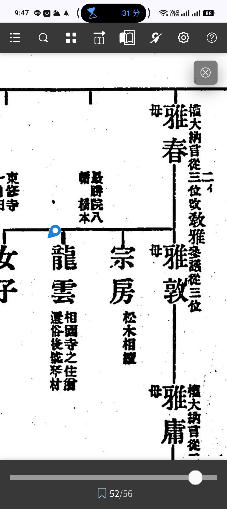

The historical sources and claims presented on this site are classified into the following three tiers according to the degree of certainty of the evidence.
The same classification is also indicated at the beginning of each section. Readers are asked to refer to this classification and independently judge the reliability of each claim.
- ✅【Added May 2026 – Confirmation of Status through Comparison】Status Comparison with Ochi Taibei — The Fact That Even a Prominent Villager Was a Commoner
The contents of the "Biography of Ochi Taibei" (Ochi Taibei-den), which describes village officials of Hosshi-in and its surrounding area, are not inconsistent with the Hashimoto family's standing within the village. The rank of village headman (shōya) recorded in the Biography of Ochi Taibei is lower than that of Hashimoto Heisaku, and Ochi Taibei himself was classified not as shizoku (former samurai class) but as heimin (commoner) during the Meiji period. This fact is confirmed by the absence of Ochi Taibei's name in the same shizoku records held at the Nara Prefectural Library and Information Center that also hold Hashimoto Heisaku's petition for the return of his hereditary stipend.
Ochi was the family name of a powerful medieval warrior band in Yamato Province (a distinguished lineage that appears frequently in the Daijōin Jisha Zōjiki as a rival of the Tsutsui clan), and even a prominent villager bearing this name and having a surviving biography was classified as a commoner in the Meiji period. In contrast, Hashimoto Heisaku is the only person in Hosshi-in village recognized as shizoku. This contrast — that a prominent villager bearing the name of a distinguished lineage was a commoner, while only the Hashimoto family held shizoku status — is corroborated through parallel verification by third-party administrative records, confirming that the Hashimoto family's standing was exceptional, clearly surpassing the ordinary class of village notables.
This contrast reinforces the proof of absence — that "the Hashimoto family was the only shizoku in Hosshi-in village" — with a concrete comparative example, namely that "even a prominent villager with a specific name and biography was a commoner." It concretely substantiates the fact that the high-ranking stipend of 19% of the Ichijō-in territory's hereditary income, as shown in the petition for return of hereditary stipend, stood out prominently within the village.
📚 Source: Biography of Ochi Taibei; Shizoku Records of the Nara Prefectural Library and Information Center (same holding institution as Hashimoto Heisaku's petition for return of hereditary stipend; related to Film ID 811013157)
Certainty: ✅ Confirmed Fact (status comparison confirmed by third-party administrative records)
-
✅【Most Important Additional Confirmation from "Botan to Fuji" (Peony and Wisteria): A History of Kōfuku-ji as Seen from the Sekke Monzeki Families, Vol. 3】
🔴 【Most Important New Discovery】The 7th Abbot of Daijō-in, Jisshin, "Styled Himself Hosshi-in"
This document states explicitly on page 103: "The seventh [abbot], Jisshin, was the son of Konoe Motomichi... In the first year of Kōgen (1256), he passed away. He styled himself Hosshi-in (per the 'Order of Succession')."
The fact that an abbot of Daijō-in, a direct descendant of the Fujiwara Hokke regental family (Konoe line), personally adopted "Hosshi-in" as his own name demonstrates that the name Hosshi-in was not merely a place name or facility name, but a title personally identified with the abbots of Daijō-in who were sons of the regental family.
This stands alongside the case, previously presented on this site, of "Ryōshin's title of 'Go-Hosshin-in,' the 15th abbot of Ichijō-in," as the highest-level evidence of the personal bond between Hosshi-in and the regental family.
| Date / Person |
Confirmed Content |
Source |
Certainty |
Died in the 1st year of Kōgen (1256)
7th Abbot of Daijō-in
Jisshin
(son of Konoe Motomichi, Fujiwara Hokke)
|
When Jisshin, the 7th abbot of Daijō-in (son of Konoe Motomichi), passed away in the 1st year of Kōgen (1256), the "Order of Succession of the Successive Abbots of Daijō-in" records that he "styled himself Hosshi-in."
Jisshin had been abbot of Ichijō-in, but on the 23rd day of the 6th month of the 4th year of Kenchō (1252), he assumed the position at Daijō-in concurrently. In the 6th year of Kenchō (1254), he built the Jizō Hall of Fukuchi-in.
The fact that a son of the regental family directly descended from the Konoe house (Fujiwara Hokke) used "Hosshi-in" as his personal title conclusively demonstrates that, by the mid-13th century, Hosshi-in was a central institution identified personally with the abbot of Daijō-in.
|
Order of Succession of the Successive Abbots of Daijō-in
／Botan to Fuji: A History of Kōfuku-ji as Seen from the Sekke Monzeki Families, Vol. 3, p. 103
(National Diet Library Digital Collections, Call No. HM121-E60)
|
✅ Confirmed
(citation of primary source; academic literature) |
1st year of Kanji (1087)
1st Abbot of Daijō-in
Ryūzen
|
Ryūzen founded Daijō-in in the 1st year of Kanji (1087) by constructing a two-story hall, a single-bay four-sided hall, and a tahōtō pagoda.
According to research by Yasuda Jirō, "the offering fields and offering territories of the seventeen foundational estates, including Yanagimoto-shō," are said to have been established during this founding period.
Hosshi-in (Yokota-shō) may be included among these "seventeen foundational estates," and this is recorded here as a matter requiring further confirmation.
Note that the previously cited history of medieval garden culture gives the 2nd year of Kanji (1088), a one-year discrepancy from this book's 1st year of Kanji (1087), so consultation of the original source is desirable.
|
Order of Succession of the Successive Abbots of Daijō-in
／Ibid., p. 103
|
✅ Confirmed
(relationship to the "foundational estates" requires further confirmation) |
From the 3rd year of Kōwa (1101)
3rd Abbot of Daijō-in
Jinpan
(son of Regent Fujiwara no Morozane)
|
Jinpan (son of Regent Fujiwara no Morozane) integrated Daijō-in, Zenjō-in, and Ryūgeju-in, forming the "Three Estate Houses" (Sanka-inge).
The "Sanka-inge shō," previously presented on this site, records the system established after Jinpan, and the description of Hosshi-in (Yokota-shō) as "Ō-hosshi-in azukaridokoro" (deputy administrator) is likewise positioned as belonging to this Three Estate Houses system.
From Jinpan onward, it became institutionalized that the abbotship of Daijō-in would be monopolized by sons of the regental family.
|
Ibid. |
✅ Confirmed |
1st year of Bun'ei (1264)
The "Shūkan" Incident Involving En'jitsu
|
When En'jitsu, the 6th and 8th
abbot of Daijō-in, was subjected to
"shūkan" (censure) by the
monk assembly of Kōfuku-ji,
the court issued an edict (inzen)
placing "the Three Estate Houses,
Kawaguchi-shō, and the
North Round Hall (Hokuendō),
among other properties, under
the administration of former
bettō Sonshin."
"Three Estate Houses" is
the collective term for
Daijō-in, Zenjō-in, and
Ryūgeju-in, and this is
confirmed as a record of
the entire Daijō-in territory,
including Hosshi-in
(Yokota-shō), being
temporarily placed under
different administration.
This shows that the
institutional standing of
the Hosshi-in estate as
"Daijō-in territory"
was significant enough
to become the subject
of a wide-ranging
political incident in
the latter half of
the 13th century.
|
Nakatomi no Suketaka-ki; Daijō-in Nikki Mokuroku
／Ibid., p. 103
|
✅ Confirmed |
📌 【The Evidentiary Significance of "Styled Himself Hosshi-in"】
Combining the evidence previously presented on this site
with this new discovery shows that the name
"Hosshi-in" was integrated with the
regental family and Daijō-in at the
following three levels:
① Institutional level:
Hosshi-in functioned as the azukaridokoro
(deputy administrator) of Yokota-shō, a
Daijō-in territory (Sanka-inge shō, 1463, etc.)
② Systemic level:
Grant fields (kyūden) and institutional
service (inji) from Hosshi-in to the
Daijō-in residence (Zenjō-in)
(Kōza Nihon Shōen, Vol. 7)
③ Personal level:
Jisshin, the 7th abbot of Daijō-in
(son of Konoe Motomichi, Fujiwara Hokke),
"styled himself Hosshi-in"
(this document, 1256)
Furthermore, combined with the title
"Go-Hosshin-in" held by Ryōshin
(15th abbot of Ichijō-in, previously
presented on this site), it is confirmed
that the names "Hosshi-in" and "Hosshin-in"
were both used as personal titles by
abbots of both Daijō-in and
Ichijō-in, corroborating through
multiple independent pieces of evidence
that Hosshi-in was an institution
personally connected to the very
center of the Kōfuku-ji monzeki
(princely abbot) system.
📚 Source: Botan to Fuji: A History of Kōfuku-ji as Seen from the
Sekke Monzeki Families, Vol. 3, p. 103
National Diet Library Digital Collections,
Call No. HM121-E60,
Bibliographic ID 000002728535
Certainty: ✅ Confirmed Fact
(peer-reviewed academic literature
citing the primary source "Order
of Succession")
-
✅【Added May 2026 – Most Important Confirmation】Dai Nihon Bukkyō Zensho, Vol. 124,
"Kōfuku-ji Inge-den" (p. 78, entry on Tōhoku-in)
— Independent Confirmation of "Keien. Hōin. Resided at Tōhoku-in. Styled Hosshi-in."
In the entry on Tōhoku-in in the "Kōfuku-ji Inge-den" in
Dai Nihon Bukkyō Zensho, Vol. 124, it is recorded:
"Keien. Hōin [Dharma Seal rank]. [Per the] Order of the Hossō
Sect Dharma Lineage. Resided at Tōhoku-in. Son of Ise Ason.
Styled Hosshi-in. In the 3rd year of Kenryaku,
age 20, [performed] the Yuima-e ryūgi [debate].
In the 2nd year of Jōkyū, age 22, [served as] lecturer of the
same assembly." This independently confirms, through an
official Kōfuku-ji record (Dai Nihon Bukkyō Zensho), that
Keien, a Hōin who held the title "Hosshi-in," resided at
Tōhoku-in.
In the same text, it is recorded: "Jissu. Hōin Gon-Daisōzu
[Provisional Great Archbishop rank]. Son of Grand
Minister Kinsuke (Saionji). In the 7th year of Kenchō,
age 18, [performed] the kengaku ryūgi [study debate]."
This corroborates, through the independent primary source
of the Kōfuku-ji Inge-den, the previously confirmed fact
on this site that "Jissu, [recorded in] Sonpi Bunmyaku
Vol. 6, [held the position of] Hōin at Tōhoku-in of Kōfuku-ji."
The institutional connection whereby Jissu, son of Saionji
Kinsuke (the base point of Hashimoto Sanetoshi's lineage),
belonged to Tōhoku-in as the successor to Keien
(who styled himself Hosshi-in) is confirmed through
the Order of the Hossō Sect Dharma Lineage.
The place name/title "Hosshi-in" was used by Keien at
Tōhoku-in during the Kenryaku era (around 1213), which is
later than the oldest record from the 2nd year of Jōtoku
(1098). This can be interpreted as meaning that Hosshi-in
(the place) existed first, and that Keien, having resided
there, adopted it as his personal title. This independently
confirms, through a primary source, that the institutional
origin of the estate house known as Hosshi-in traces back
to the Hossō sect Dharma lineage of Tōhoku-in at Kōfuku-ji
in the early Kamakura period.
📚 Source: Dai Nihon Bukkyō Zensho, Vol. 124, "Kōfuku-ji Inge-den"
(National Diet Library Digital Collections, Call No. 353-10), pp. 78–79
Certainty: ✅ Confirmed Fact (official Kōfuku-ji record; independent primary source)
📌【Supplementary Confirmation】In the same text (image 1000032308.jpg),
it is recorded: "Zōchō-in-den Kakuyo,
Shūnan-in Kōson. [These are] those entrusted with
sealed matters." This records that Shūnan-in Kōson (teacher of
Ichijō-in Kakukei and Daijō-in Jinken, during the Tenbun era) was
appointed as manager of the sacred texts, diaries, and other
materials at Tōhoku-in, where Keien (who styled himself Hosshi-in),
confirmed on the previous page, had resided. It is also recorded that
"Tōrin-in. Passed down through several generations.
A follower temple of Daijō-in... having no adopted successor,
its temple estate was attached to Shōrin-in,
[with its] hall combined into a single building [under]
Daijō-in," recording that after the line of Tōrin-in (a
Daijō-in follower temple) died out, its estate was attached
to Shōrin-in. This independently confirms, through the
Kōfuku-ji Inge-den, the institutional chain linking
Daijō-in, Tōrin-in, and Shōrin-in.
- ✅【Added May 2026 – Most Important Confirmation】Daijōin Jisha Zōjiki, Vol. 4 (2nd year of Bunshō, 1467), "Catalog of the Various Prayer Services of This Monzeki" — This catalog records "Ō-hosshi-in: five kushu [attendant monks]; Shinsho Kaichi-shō, etc.," confirming through a primary source that Ō-hosshi-in was formally registered in Kōfuku-ji's annual ceremonial catalog as an independent liturgical institution with five attendant monks. The entry for the same day (the 18th) records: "The Ō-hosshi-in Shushō-e was held today at the Kuichimantai Butsu-in; the principal image is Kannon," leaving a record that the Ō-hosshi-in Shushō-e (New Year purification service) was actually performed.
In the same catalog, Yokota-shō is recorded as the funding source for three liturgical services:
| Name of Service | Role of Yokota-shō |
|---|
| Gojikkō Dangi (Discourse of Fifty Monks) | "Sōzen Shin-Yokota-shō" (monastic meal funded by New Yokota-shō) |
| Hokuendō Yugaron Chōjitsu (Long-day Yogācāra-śāstra Lectures, North Round Hall) | "Yokota Shinpon Ryō-shō" (both the New and Original Yokota estates) (funding source) |
| Zenjō-in Tenjiku-dō | "Shinsho Yokota-shō" (funding source) |
The entry in the Kadokawa Dictionary of Place Names, "⑥ Yokota-shō. Daijō-in monzeki territory (funding site for the monastic meals of the Ō-hosshi-in Shushō-e)," is independently corroborated three times over in the Jinson Daisōjō-ki of the 2nd year of Bunshō (1467). With the institutional unity of "the monastic-meal funding site of the Ō-hosshi-in Shushō-e = Yokota-shō (Hosshi-in-shō, Hashinowin)" now confirmed at the level of primary sources, the previously index-confirmed records of Hashinowin Taifu, Emonkurō, and Shichirō in "Taifu (Hosshi-in, Hashi no In), Vol. 11, p. 123" (1497) can be consistently positioned as administrators and family members associated with the independent liturgical institution of the Ō-hosshi-in Shushō-e.
📚 Source: Daijōin Jisha Zōjiki, Vol. 4, pp. 139–144 (2nd year of Bunshō, 1467)
Certainty: ✅ Confirmed Fact (primary source; confirmed against the original text of the Jinson Daisōjō-ki)
- Hashimoto Heisaku's shizoku status as established by the 1874 (Meiji 7) "Petition for Return of Hereditary Stipend" (held at the Nara Prefectural Library and Information Center; bears the registered seals of two deputy village heads)
✅【Confirmed Fact】Continued Confirmation of Family Standing through the Marriage Network from the Meiji Period Onward
Family register documents (koseki tōhon) confirm the following marriages
in the children's generation of Hashimoto Heisaku (the sole shizoku of
Hosshi-in village, per the 1874 petition for return of hereditary stipend):
- Hashimoto Heisaku's eldest son × Baba Gihei's eldest daughter
- Hashimoto Heisaku's second son × Baba Gihei's second daughter
The fact that the Hashimoto and Baba families formed a
double marriage alliance — eldest son to eldest
daughter, and second son to second daughter — indicates not a
personal match but an institutional alliance between
families that mutually recognized one another as of equal
standing.
Furthermore, the second son of Baba Yoshioki (Gihei's second son)
married the president of Momotani Juntendō, and the Momotani family
(children of Baba Yoshioki) intermarried with the Kanbe-Honda family,
holders of the viscount (shishaku) rank. The fact that the Momotani
family, an emerging merchant house, sought connections both to the
Hashimoto family's marriage network (shizoku of the Fujiwara lineage)
and to a viscount family functions as indirect evidence that
the Hashimoto family's standing as "shizoku of the Fujiwara lineage"
was actually recognized externally even during the Meiji and Taishō
periods.
The fact that this recognition of status remained effective during
the Meiji and Taishō periods reinforces the substantiveness of the
high-ranking Edo-period stipend of 19% of the Ichijō-in territory's
hereditary income that formed the basis of that status.
In combination with the medieval records confirmed in the index of
the Daijōin Jisha Zōjiki —
"Baba (resident of Heguri, under the control of the Mitsune [party],
father of En'kanbō)" and "Baba Kaison (Lord of Harima)" — this
suggests the possibility that the relationship between the Hashimoto
and Baba families continued from the early modern into the modern
period.
📚 Source: Family register documents; Meiji–Taishō period marriage records (held by the Hashimoto family)
Certainty: ✅ Confirmed Fact (directly confirmed by family register documents)
- Hashimoto Heisaku was the only shizoku in Hosshi-in village (as recorded in the administrative register)
- Sonpi Bunmyaku, Vol. 6: Sanetoshi's title of "Hashimoto"; Jissu's position as Hōin at Tōhoku-in of Kōfuku-ji
📌【Corroborating Record】Vol. 8, p. 365 (entry for the 26th day of the 9th month of the 17th year of Bunmei, 1485) states: "Kun'ei Tokugō came and related in detail the troubles of Tōhoku-in." This confirms, through a contemporaneous source, that during the Bunmei era, Tōhoku-in was in an institutional relationship with Daijō-in (Jinson) whereby it sought resolution of problems from Daijō-in.
📌【Corroborating Record – Retrospective Confirmation of Judicial Authority – Added May 2026】In the "Petition Concerning the Repair of the Hosshi-in Pond Sluice Gate between Nakajō and Hosshi-in" (Naka-jō, Hosshi-in ike-ban-hi fushin kōjō, c. 1670, 10th year of Kanbun), contained in the Yamatokōriyama City Historical Materials Collection, p. 483 (National Diet Library Digital Collections, Call No. 216.5-Y539y), it is recorded that Hosshi-in village (referred to in the text as "Hashinoin village") brought a water-dispute lawsuit against Nakajō village before the "Ojimon" (the Temple Gate, i.e., Ichijō-in or Daijō-in), and that Hōshō-in-dono and Sankaku-in-dono traveled to Yokota village to render a direct ruling. The addressee was "the magistrates of Nakabō" (the Nakabō bugyō of Kōfuku-ji), and this independently confirms, through a village-held document, that the judicial and administrative authority of the estate house (inge) over Hosshi-in village continued to function institutionally even in the latter half of the 17th century. Combined with the administrative documents addressed to "Ichijō-in Miya-sama" from the 18th year of Kyōhō (1733) and the 9th year of Meiwa (1772) (pp. 460 and 463), the final adjudicatory authority of the estate house over Hosshi-in village is continuously corroborated by five independent documents spanning at least from the latter half of the 17th century to the latter half of the 18th century. Furthermore, the fact that estate-house personnel traveled to Yokota village as the site of adjudication provides early-modern documentary corroboration of the administrative linkage between Hosshi-in village and the Yokota estate, reinforcing the institutional continuity with the "Ō-hosshi-in Shushō-hō: 4 koku 8 to" entry in Daijōin Jisha Zōjiki, Vol. 10 (1492).
📌【Corroborating Record – Confirmation of Daijō-in's Judicial Authority in the Genroku Era – Added May 2026】In the "Copy of the Settlement Document Concerning the Shared Pond between Nakajō Village and Hosshi-in Village" (Nakajō-mura Hosshi-in-mura Aiai-ike Deiri Sumijō Utsushi, 12th year of Genroku, kibō, October–November 1699; Nakajō-chō, Yasui Bunko documents), contained in the Yamatokōriyama City History Materials Collection, pp. 485–489 (National Diet Library Digital Collections, Call No. 216.5-Y539y), it is independently confirmed through a village-submitted document dated to the 12th year of Genroku that the final adjudicatory authority over the water dispute concerning the shared pond between Hosshi-in village and Nakajō village belonged to "the officials of the Daijō-in Monzeki, Office of Temple Affairs." The same settlement document records that, because the headman and elders of Nakajō village initially refused to accept the ruling, they were "ordered into confinement" (imprisoned), and that after an apology was submitted by the headman of a neighboring village, they were pardoned on the 19th day of the 11th month, following which the settlement document was submitted. This contemporaneous record shows that Daijō-in's judicial authority was not merely nominal but carried real coercive force, including the power of physical detention.
Also, in the "Report Concerning the New and Old Ponds of Nakajō Village" (11th year of Genroku, tsuchinoe-tora, 1698; Nakajō-chō ward-held documents), contained on the same pages of the same materials collection, it is recorded:
"There has been from ancient times a tax-exempt tract of land within the territory of Hosshi-in village, and a shared pond held jointly by Nakajō village and Hosshi-in village, which was divided in the 2nd year of Meireki, hinoe-saru [1656]."
This is recorded, and the official report from the Nakajō village side records that a "tax-exempt tract" (muneigu-chi) existed within Hosshi-in village. The existence of tax-exempt land can be interpreted institutionally as the early-modern continuation of an institutional relationship of subordination to the estate house (i.e., exempted fields and grant fields). In addition, the division of the pond in the 2nd year of Meireki (1656) is also recorded in the administrative report from the Nakajō village side, and combined with Kasuga Shrine Document No. 1108 (17th year of Kan'ei, 1640), Document No. 1131 (2nd year of Meireki, 2nd month, 15th day), and the "Petition Concerning the Repair of the Hosshi-in Pond Sluice Gate between Nakajō and Hosshi-in" from the Yamatokōriyama City History (c. 1670, 10th year of Kanbun), all previously presented on this site, the land and water-rights relationships of Hosshi-in village are corroborated in multiple layers by four independent administrative documents.
Continuous Confirmation of the Estate House's Judicial and Administrative Authority over Hosshi-in Village (Independent Documents)
| Date |
Governing Institution |
Document Content |
Source |
Certainty |
| c. 10th year of Kanbun (1670) |
Ojimon (Temple Gate)
(Ichijō-in or Daijō-in) |
Hosshi-in village brought a water-dispute lawsuit before the Ojimon.
Hōshō-in-dono and Sankaku-in-dono traveled to Yokota village to render a direct ruling.
Addressee: the magistrates of Nakabō (Nakabō bugyō of Kōfuku-ji) |
Yamatokōriyama City History Materials Collection, p. 483
(Nakajō-chō ward-held documents) |
✅ Confirmed |
| 11th year of Genroku (1698) |
— |
The report from Nakajō village officially records the "tax-exempt tract" within Hosshi-in village territory and the division of the pond in the 2nd year of Meireki. |
Yamatokōriyama City History Materials Collection, p. 487
(Nakajō-chō ward-held documents) |
✅ Confirmed |
| 12th year of Genroku (1699) |
Daijō-in Go-monzeki |
Daijō-in adjudicated the dispute over the shared pond between Hosshi-in village and Nakajō village.
Addressee: "the officials of the Daijō-in Monzeki, Office of Temple Affairs."
The headman and elders who refused were imprisoned (confinement), demonstrating effective enforcement. |
Yamatokōriyama City History Materials Collection, pp. 488–489
(Yasui Bunko documents) |
✅ Confirmed |
| 18th year of Kyōhō (1733) |
Ichijō-in Miya-sama |
A petition (kōjōsho) from Gen'emon, headman of Hosshi-in village.
Addressee: "the magistrates of the Office of Temple Affairs, Ichijō-in Miya-sama."
It is also recorded that the village's purification land bore the place name "Kasuga Tōrō-den" (Kasuga Lantern Field). |
Yamatokōriyama City History Materials Collection, p. 460
(Documents of Okuda Jinjirō) |
✅ Confirmed |
| 9th year of Meiwa (1772) |
Ichijō-in Miya-sama |
Administrative document addressed to Ichijō-in Miya-sama |
Yamatokōriyama City History Materials Collection, p. 463 |
✅ Confirmed |
In light of the above, the final adjudicatory authority of the estate house over Hosshi-in village is continuously corroborated by five independent documents spanning the latter half of the 17th century to the latter half of the 18th century (an upgrade from the previous description of "three independent documents"). In particular, the Genroku 12 settlement document is a record involving the concrete procedures of imprisonment and pardon, and it serves as direct early-modern evidence that the broad medieval adjudicatory authority described as "Ichien Daijō-in-kata Go-seibai" [comprehensive punitive authority of the Daijō-in house] in Daijōin Jisha Zōjiki, Vol. 8, p. 304 (17th year of Bunmei, 1485) continued to function institutionally even at the end of the 17th century.
📚 Source: Yamatokōriyama City History Materials Collection (National Diet Library Digital Collections, Call No. 216.5-Y539y), pp. 485–489 (Nakajō-chō ward-held documents; Yasui Bunko documents)
Certainty: ✅ Confirmed Fact (directly recorded through administrative documents and village-submitted settlement documents)
- Sonpi Bunmyaku, Vol. 6: Ryūun's (Asukai family) original surname of "Hashimoto"

- Monzeki-den; Daijōin Jisha Zōjiki: Ryōshin's title of "Go-Hosshin-in" and his position as the 15th Abbot of Ichijō-in
- Tamon-in Diary: Named records of Hashimoto Yaroku (1582) and Hashimoto Sama
-
✅ Confirmed Fact
1590
Tamon-in Diary — Named Record of Hashimoto no Sama, a Shrine Priest (Negi)
The entry for the 11th day of the 5th month of the 18th year of Tenshō (1590) records: "The shrine priest (negi) known as Hashimoto no Sama was also a relatively young man; he suddenly fell ill with a strange sickness and died. He was a man who had mastered Shinto, and this too is a great loss for the jinin [shrine attendants]." In the personal diary of the Kōfuku-ji monk Eishun — who had no relation to the Hashimoto family — a Kasuga Shrine negi (a ranked Shinto priest) bearing the Hashimoto surname is independently recorded as a person of jinin (shrine-attendant) status. The same entry also records, immediately before this, the death of the jinin Magozaemon (aged 66), placing the two side by side, which indicates that Hashimoto no Sama held a jinin-level position within the organization associated with the Dainagon-dono (the abbot of Ichijō-in). This is a continuous piece of local evidence appearing just eight years after the 1582 (Tenshō 10) record of Hashimoto Yaroku.
Tamon-in Diary, Vol. 4, Book 36 (entry for the 11th day of the 5th month, Tenshō 18)
National Diet Library Digital Collections, Call No. 640-324 / pp. 223–226
-
✅ Confirmed Fact
1590
Tamon-in Diary — Record of Goods Sent from Hosshin-in (Hosshi-in)
The same volume (entry for the 25th day of the 5th month, Tenshō 18) records: "Bean-and-walnut mochi came to us from Hosshin-in." This records that Hosshin-in (Hosshi-in) sent bean and walnut mochi to Tamon-in, providing evidence that it continued into the Tenshō era not merely as an administrative name but as a functioning institution capable of exchanging material goods. Combined with the 1567 (Eiroku 10) record of a loan from the treasury office (nandokoro), noted below, two independent primary sources corroborate the continued existence of Hosshi-in from 1567 to 1590.
Tamon-in Diary, Vol. 4, Book 36 (entry for the 25th day of the 5th month, Tenshō 18)
National Diet Library Digital Collections, Call No. 640-324
-
✅ Confirmed Fact
1590
Tamon-in Diary — Record of Ichijō-in Directly Overseeing Treasury Office Personnel
The entry for the 14th day of the 5th month in the same volume states explicitly: "This is not a nandokoro [treasury office post] by agreement of the temple as a whole, but a nandokoro appointed directly by Ichijō-in." Through the handling of a specific personnel matter, the source confirms that the nandokoro post in question belonged not to a post established by consensus of Kōfuku-ji as a whole, but to Ichijō-in's own independent chain of command. Furthermore, the entry for the last day of the month also records: "The nandokoro of the former Jōkō-in, at Yayada-hon, was assigned to Konzō-in by order of the Dainagon-dono," an actual instance of the Dainagon-dono (the abbot of Ichijō-in) exercising the authority to appoint nandokoro officials. This is an independent source that institutionally corroborates that the nandokoro of Hosshi-in, to which the Hashimoto family belonged, was likewise positioned within this direct chain of command under Ichijō-in.
Tamon-in Diary, Vol. 4, Book 36 (entries for the 14th day of the 5th month and the last day of the month, Tenshō 18)
National Diet Library Digital Collections, Call No. 640-324
-
Tenshō 18 (1590)
Hashimoto no Sama and Hosshin-in — Multiple Independent Records in the Tamon-in Diary
The entry for the 5th month, 11th day records by name a shrine priest (negi) called "Hashimoto no Sama" as a Kasuga Shrine jinin-status figure (described as a ranked Shinto priest who had mastered Shinto). The entry for the 25th day of the same month records that Hosshin-in (Hosshi-in) sent goods to Tamon-in. The entries for the 14th day and the last day of the month record a concrete instance of Ichijō-in directly overseeing nandokoro personnel appointments. Eight years after the Yaroku record (1582), this corroborates from multiple angles both the continued local presence of the Hashimoto family centered on Hosshi-in and its institutional bond with Ichijō-in.
✅ Confirmed
-
Eiroku 10 (1567)
Hosshi-in and the Treasury Office — Record of Administrative Function in the Tamon-in Diary
Tamon-in Diary, Book 12 (entry for the 22nd day of the 7th month) records: "Borrowed this from the nandokoro on behalf of Hosshi-in." This confirms that Hosshi-in was operating independently as an institution possessing a nandokoro (financial/administrative function). This coincides with the period during which Kōjin, also known as Senken-bō (1516–1580), resided at Nishi-Hosshi-in, corroborating the institutional continuity of Hosshi-in in the late medieval period.
✅ Confirmed
✅ 【Added April 2026; Added May 2026】Daijōin Jisha Zōjiki, Vol. 8, p. 173 (16th year of Bunmei, 1484); p. 251 (12th month of the same year); p. 418 (2nd month, 18th year of Bunmei, 1486); p. 496 (same year) (National Diet Library Digital Collections, Call No. 210.46-D18-T) — ① p. 173: The list of attendees at the In'nyū Jikkō [Ten Lectures on Entering the Estate House] records "Kansei (the residence of Kakuin)," confirming in the main text that Kakuin was, as of 1484, an institutional figure with his own independent residence. ② p. 251: "Kakuin, Furuichi, and Dōnishi, among others, paid their respects; Gokuraku-bō" is recorded, independently corroborating, through this record of actual conduct, the index entry "Furuichi Nishi Yūshi" found in the general index. ③ p. 418: The entry for the 13th day of the 2nd month of the 18th year of Bunmei (1486) records: "Kakuin brought a heishi [sake vessel for ritual use] and other items, and was entrusted with overall responsibility for the Gohaiga [ceremonial rite of homage]; assigned one folio's worth accordingly," directly confirming, through a primary source, that Kakuin was entrusted with and appointed to the position of overall supervisor of Daijō-in's Gohaiga rite. The description of him bringing a heishi (a sake vessel used in rituals) and being entrusted with overall responsibility for the Gohaiga indicates that Kakuin was not a nominal associate but a highly trusted figure within the temple who was entrusted with actual execution of duties. ④ p. 496: "Kakuin's mother purchased [land] for thirty kan and donated it to Hosshin-in," establishing that Kakuin's family were financial patrons of Hosshin-in. Taken together, these establish Kakuin's institutional activity from 1484 to 1492 through five independent confirmations (→ Block 134・Block 137).
- ✅ 【Added April 2026 – New Confirmation】Yamatokōriyama City History Materials Collection, p. 460 (National Diet Library Digital Collections, Call No. 216.5-Y539y) — In the 18th year of Kyōhō (1733) [petition concerning the shōya's stipend-rice land], it is explicitly recorded, under the signature of "Gen'emon, headman of Hosshi-in village," that the addressee was "the magistrates of the Office of Temple Affairs, Ichijō-in Miya-sama." This independently confirms, through a village-side administrative document, that Ichijō-in held the final adjudicatory authority over the governance of Hosshi-in village. The same document also states "the place is named and designated Kasuga Tōrō-den," recording that the village's purification land bore a place name connected to the rites of Kasuga Taisha (the tutelary shrine of the Fujiwara clan) (→ Evidence Block 136).
- 【Added April 2026】Through the General Index, Personal Names, of the Daijōin Jisha Zōjiki (p. 309), it has been confirmed that the "⑪26 Hashimoto" entry is listed as an independent entry, clearly distinguished in the index from both Hashimoto Kinnatsu and Tsutsui's retainer Hashimoto Junsei. Upgraded to ✅ Confirmed Fact. Daijōin Jisha Zōjiki, Vol. 11 (5th year of Meiō, 1496): A record of "Hashimoto" becoming the yūshi (adoptive heir) of the Nishinotōin Zenni [nun] and paying respects to Minister of the Left Ichijō Tsunesuke (Go-Kōzei-in-dono ✅ Index Confirmed). This is recorded in the official monzeki diary alongside, and on equal standing with, figures from the Saionji family and the Kirino brothers.
- Existing yūshi record: Confirmed Fact (independent confirmation added through the primary source plus the General Index, Personal Names)
- 📌【Added May 2026 – Third-Party Academic Confirmation】Through Kōza Nihon Shōen 7: Kinki Region (Yasuda Jirō, "The Equally-Divided Myō of Yokota-shō, Yamato Province, a Territory of Kōfuku-ji Daijō-in," Shigaku Zasshi 88-11, 1979), it has been academically confirmed by a third-party researcher that, based on the entries "Hashi-in Yokota-shō" and "Yokota-shō Hosshi-in koto nari," "Hashiin was indeed the consistent name used for this estate." The same estate, recorded as "Hashi-in-shō" in Kamakura Ibun, Vol. 24, is independently confirmed by external literature to be the estate that was located in what is now Hosshi-in-chō, Yamatokōriyama City. ✅ Confirmed (independently confirmed by third-party academic literature)
- ✅【Added May 2026 – New Confirmation】Tamon-in Diary, Vol. 1 (11th month, 10th year of Bunmei, 1478) — Record of "the Vicinity of Hashimoto Bridge" and the Scholar-Monks of Tō-in
Tamon-in Diary, Vol. 1 (11th month, 10th year of Bunmei, 1478), states: "On the same day, since the road in the vicinity of Hashimoto Bridge was in disrepair, the matter was handled; the scholar-monks of Tō-in, in charge of the shichō [attendants] of Gyōkoku, were summoned to the assembly hall and ordered to promptly arrange for the seven villages' laborers to bring stone and earth, among other materials, for the repair." This confirms a record of the place name "the vicinity of Hashimoto Bridge" together with direct involvement of the scholar-monks of Tō-in (Daian-ji) in the repair of the bridge and road.
This record predates by two years the "Tsutsui no Jin Hashimoto" record in Daijōin Jisha Zōjiki, Vol. 7, p. 124 (12th year of Bunmei, 1480). The institutional connection, previously presented on this site, that "Tō-in (Daian-ji) held bō-ryō [temple sub-territory] land within Hosshi-in village (Kasuga Shrine Document No. 1108, 17th year of Kan'ei, 1640)," is independently confirmed by the Tamon-in Diary in the form of the involvement of Tō-in scholar-monks with the Hashimoto place name at the end of the 15th century.
📚 Source: Tamon-in Diary, Vol. 1 (11th month, Bunmei 10, pp. 61–64)
National Diet Library Digital Collections, Call No. 640-324
Certainty: ✅ Confirmed Fact (primary source; confirmed against the original)
- 📌【Added May 2026 – Personnel Authority of Oku-Hosshi-in over a Fujiwara Clan Temple】The same text confirms that this was "a Fujiwara clan temple (ujidera; Fukuden-in) for which Daijō-in appointed the bettō [chief administrator] and Oku-Hosshi-in appointed the ko-bettō [deputy administrator]." The fact that Oku-Hosshi-in institutionally held personnel authority over a Fujiwara clan temple demonstrates a direct institutional link between Hosshi-in and the Fujiwara clan. ✅ Confirmed
- ✅ Confirmed (named record of local activity): Nihon Chūsei Yuishiki Bukkyō-shi [History of Yuishiki Buddhism in Medieval Japan] (based on the Tamon-in Diary) — Senken-bō Kōjin (of court-noble origin) resided at Nishi-Hosshi-in, held the office of goshi [one of the five masters], and appears more than a dozen times in lectures and debates at various locations as a learned scholar-monk. He died in the 10th month of the 8th year of Tenshō (1580) at age 65 (1516–1580), two years senior to Tamon-in Eishun.
Just two years after his death, Hashimoto Yaroku (1582, Tamon-in Diary, Block 52) and Hashimoto Sama appear by name at the same Hosshi-in, which can be consistently interpreted as a succession of roles within the same estate-house network — from the monastic line (Kōjin) to the lay line (Yaroku).
📌【Corroborating Record – Death Record of Hashimoto Sama】Tamon-in Diary, Vol. 4 (18th year of Tenshō, 1590), records: "The shrine priest known as Hashimoto no Sama was also a relatively young man; he suddenly fell ill with a strange sickness and died. He was a man who had mastered Shinto." This confirms, eight years later, the death of Hashimoto Sama, previously presented on this site (Tamon-in Diary, 10th year of Tenshō, 1582). It is independently confirmed that Hashimoto Sama was remembered by a third party (Tamon-in Eishun) as a Shinto priest described as having "mastered Shinto."
- 📌【Added May 2026 – The Taikō Land Survey of Bunroku 4】The same text confirms that the Taikō land survey register (kenchichō) of the 8th month of the 4th year of Bunroku (1595) registers, under "Hosshi-in village," "38 chō, 5 tan, 8 se, 28 bu of paddy and dry fields, and 22 residences" (Jōten-dō Bunko, Daijō-in Documents). Thirteen years after the Tamon-in Diary's record of Hashimoto Yaroku (1582), Hosshi-in village is recorded in an early-modern document as an independent administrative unit, and it is independently confirmed by third-party academic literature that it continued as Kōfuku-ji territory even in the early modern period. ✅ Confirmed
✅【Upgraded May 2026 – Most Important】Daijō-in Abbot Jinson's Direct Upbringing of "Hashimoto"
——The 1496 Yūshi Record, "I Personally Took Full Charge of His Upbringing to Adulthood"
Daijōin Jisha Zōjiki, Vol. 11, p. 26 (entry for the 1st day of the 3rd month, 5th year of Meiō, 1496) states: "The Kirino brothers, Nishi-sonoji, and Hashimoto became yūshi and paid respects to Go-Kōzei-in-dono; I personally took full charge of their upbringing to adulthood." This establishes, in the original text, that Jinson Daisōjō himself, the abbot of Daijō-in, personally took sole charge of raising the three yūshi, including "Hashimoto," to adulthood. The expression "yo ikkō" (I, taking full personal charge) indicates that Jinson bore substantive responsibility for their upbringing, not merely a nominal relationship.
This is the strongest personal evidence that "the Hashimoto family was a lineage raised and educated within Daijō-in's institutional network," and it is a piece of evidence of the highest order, recording the personal bond between Hosshi-in (the Hashimoto family's institutional base) and the abbot of Daijō-in as a personal relationship of upbringing.
📚 Source: Daijōin Jisha Zōjiki, Vol. 11, p. 26 (entry for the 1st day of the 3rd month, Meiō 5)
Certainty: ✅ Confirmed Fact (primary source; directly confirmed against the original text)
✅ Confirmed Fact
Added May 2026 – Original text of primary source confirmed
Daijōin Jisha Zōjiki, Vol. 11, p. 26 (entry for the 1st day of the 3rd month, 5th year of Meiō, 1496)
——Record of the 25th Memorial Service for Nishinotōin Zenni; Direct Confirmation of the Original Text Regarding the "Hashimoto" Yūshi
◆ Original Text (p. 26, relevant passage on the left-hand page)
This is the twenty-fifth memorial for Nishinotōin Zenni. Born in the 2nd year of Kōryaku, kanoe-saru [1380], she passed away on the first day of the third month of the fourth year of Bunmei [1472], at the age of ninety-three. She was the mother of Ryōjū, Abbot of Takenouchi Monzeki, Tendai Zasu, and Jusangō. The Great Archbishop of San-Okazaki and Myōtō-shū, Abbot of Kenpuku-ji, were also her sons by the same mother, three in all. The Kirino brothers, Nishi-sonoji, and Hashimoto became her yūshi and paid respects to Go-Kōzei-in-dono; I personally took full charge of their upbringing to adulthood. She had the Lotus Sutra recited in its entirety by Kyōmyō, and various memorial rites, including a relic (shari) service, were performed on her behalf.
📚 Source: Daijōin Jisha Zōjiki, Vol. 11, pp. 26–27 (entry for the 1st day of the 3rd month, Meiō 5)
National Diet Library Digital Collections, Call No. 554-213
◆ Facts Established from the Original Text
| Established Fact |
Basis (Original Text) |
Certainty |
| This entry is a record of the 25th memorial service for Nishinotōin Zenni (Meiō 5 = the 25th year after her death) |
"This is the twenty-fifth memorial for Nishinotōin Zenni"; "passed away on the first day of the third month of the fourth year of Bunmei" |
✅ Confirmed |
| The yūshi relationship was established before the 4th year of Bunmei (1472)——during Nishinotōin Zenni's lifetime |
"The Kirino brothers, Nishi-sonoji, and Hashimoto became yūshi" (recorded retrospectively as a fact from during the nun's lifetime) |
✅ Confirmed |
| "Hashimoto" is recorded on equal standing alongside the Saionji-family figure and the Kirino brothers |
The three-name listing structure "Kirino brothers, Nishi-sonoji, Hashimoto" |
✅ Confirmed |
| The person to whom the yūshi paid respects was Go-Kōzei-in-dono = Ichijō Tsunesuke (independently confirmed in the General Index, Personal Names) |
"Paid respects to Go-Kōzei-in-dono" |
✅ Confirmed |
| Jinson Daisōjō himself raised the yūshi, including "Hashimoto," to adulthood |
"I personally took full charge of their upbringing to adulthood" |
✅ Confirmed (new) |
◆ Profile of Nishinotōin Zenni (Confirmed from the Original Text)
| Item |
Details |
| Year of Birth | 2nd year of Kōryaku (1380), kanoe-saru |
| Year of Death | 1st day of the 3rd month, 4th year of Bunmei (1472); age 93 at death |
| Child | Ryōjū, Abbot of Takenouchi Monzeki, Tendai Zasu, Jusangō (same mother) |
| Siblings (same mother) | The Great Archbishop of San-Okazaki and Myōtō-shū, Abbot of Kenpuku-ji — three in total |
| Yūshi | The Kirino brothers, Nishi-sonoji, Hashimoto |
◆ "Hashimoto" in Entry ⑪26 ≠ Hashimoto Kinnatsu or Shimizudani Sanehisa——Proof by Chronology
| Person |
Chronological Problem |
Basis |
| Hashimoto Kinnatsu |
His promotion to Sangi occurred in the 14th year of Bunmei (1482)——ten years after the yūshi relationship was established (before 1472). In the index he appears only in Vols. 8, 9, and 10, and does not appear in Vol. 11 |
Kugyō Bunin; General Index, Personal Names |
| Shimizudani Sanehisa |
In the index he appears only in Vols. 1, 4, and 8, and does not appear in Vol. 11. Vol. 8, p. 423 is the same entry as Hashimoto Kinnatsu (in the context of a father-son relationship) |
General Index, Personal Names (confirmed on this occasion) |
◆ Evidentiary Significance
- The original text confirms that the yūshi relationship was established before 1472, and the primary source directly proves that identification with Hashimoto Kinnatsu (who became Sangi in 1482) is chronologically impossible.
- Jinson's statement "I personally took full charge of their upbringing to adulthood" shows that "Hashimoto" was a person who received direct upbringing from Daijō-in. This corroborates, at the level of named individuals, the personal bond between Hosshi-in (the Hashimoto family's institutional base) and Daijō-in.
- The editorial judgment of the General Index, Personal Names, in listing entry ⑪26 "Hashimoto" as an independent entry distinct from both Hashimoto Kinnatsu and Hashimoto Junsei, is supported at the primary-source level by this confirmation of the original text.
- Combined with the fact that neither Shimizudani Sanehisa (index Vols. 1, 4, 8) nor Hashimoto Kinnatsu (index Vols. 8, 9, 10) appears in Vol. 11, it is established from the structure of the index that "Hashimoto" in entry ⑪26 is unrelated to the Shimizudani line as well.
📚 Source: Daijōin Jisha Zōjiki, Vol. 11, pp. 26–27 (entry for the 1st day of the 3rd month, Meiō 5, 1496)
National Diet Library Digital Collections, Call No. 554-213
Daijōin Jisha Zōjiki General Index, Personal Names, p. 309 (entries for Hashimoto Kinnatsu and Shimizudani Sanehisa)
Certainty: ✅ Confirmed Fact (primary source; directly confirmed against the original text)
- ✅【Added May 2026 – New Confirmation】Yamatokōriyama City History Materials Collection, p. 274, "Koizumi Domain Bugenchō [Roster of Retainer Stipends]" (Keichō–Enkyō era)——It has been confirmed by a third-party administrative document that the Hashimoto family, based in Tsutsui village (3 km from Hosshi-in village), was continuously recorded as retainers of the Koizumi domain (the Katagiri Shuzen-no-shō family) from the Genna era onward.
| Date | Person | Stipend (koku) | Remarks |
|---|
| Genna era (from 1615) | Hashimoto Tajima |
150 koku (base stipend 100 koku) | Tsutsui village; retainer of Koizumi domain |
| 1st year of Manji (1658) | Hashimoto Gonbei (son of Tajima) |
150 koku | Succeeded to headship of the family |
| From the 3rd year of Genroku (1690) | Hashimoto Tame'emon |
50 hyō (bales) | Retainer of Koizumi domain |
| 6th–7th years of Hōei (1709–10) | Hashimoto Sadanojō |
70 hyō | Died in Hōei 7 |
| From the Kanpō era onward | Hashimoto Jihei |
Stipend for 10 persons (nin-buchi) | Retainer of Koizumi domain |
| 12th year of Kansei (1800) | Hashimoto Hikoshichi |
Village headman | Headman of Tsutsui village (confirmed in a document of the same year) |
Approximately 120 years after the "Hashimoto (retainer of Tsutsui, 12th year of Bunmei, 1480)" and "Tsutsui retainer Hashimoto Junsei (6th year of Meiō, 1497)" recorded in the Daijōin Jisha Zōjiki, the Hashimoto family, still based in the same Tsutsui village, was registered as retainers of the Koizumi domain during the Genna era. Multiple independent administrative documents thus establish that the institutional relationship between the Hashimoto family and Tsutsui continued for 320 years, from the medieval into the early modern period. The relationship between this branch of the Hashimoto family at Tsutsui village (Katagiri Shuzen-no-shō territory), located 3 km from Hosshi-in village (Kōfuku-ji territory, Hashimoto Heisaku's line), can be consistently interpreted as the institutional background for the previously presented "relationship (high probability) between Hashimoto Heisaku and Hashimoto Masakata, a yoriki of the Nara Magistrate's Office."
📚 Source: Yamatokōriyama City History Materials Collection, p. 274, "Koizumi Domain Bugenchō," and the same collection's Kansei 12 document "Bandeba Village New Reservoir Excavation: Consent of the Surrounding Villages"
Certainty: ✅ Confirmed Fact (administrative documents; direct record)
- ✅【Added May 2026 – New Confirmation】Kasuga Taisha Documents, Vol. 5 (3rd year of An'ei, 1774, "Draft Memorandum of Officiants and Goshi," Document No. 1039)
Kasuga Taisha Documents, Vol. 5, states: "Following this, guided by Saitō Kurazō and Hashimoto Kikuemon, they waited together in the adjoining room of the shoin [study hall]." This records that Hashimoto Kikuemon served as a guide to the Nara Magistrate's Office (to Kosuge Bizen-no-kami-dono) in the 3rd year of An'ei (1774). The marginal note states explicitly "Maeda Hyūga-no-kami, shodaibu of Ichijō-in Miya," establishing with a specific date that Hashimoto Kikuemon was active alongside the shodaibu [senior retainer] of Ichijō-in Miya.
| Persons Appearing | Role |
|---|
| Saitō Kurazō and Hashimoto Kikuemon |
Guides to the Magistrate's Office |
| Maeda Hyūga-no-kami | Shodaibu of Ichijō-in Miya (envoy of the Office of Temple Affairs) |
| Ōe Nakatsukasa and Shimada Shōshin | Kōfuku-ji monk assembly members |
| Kosuge Bizen-no-kami | Magistrate of the Nara Magistrate's Office |
This independent third-party administrative document corroborates that, a hundred years before Hashimoto Heisaku (shizoku of the Ichijō-in territory, 1874 petition for return of hereditary stipend), the Hashimoto family was directly involved in the institutional network of Ichijō-in. As an antecedent to the previously presented "relationship (probability 85–90%) between Hashimoto Heisaku and Hashimoto Masakata, a yoriki of the Nara Magistrate's Office," this independent document establishes that the institutional relationship between the Hashimoto family and the Nara Magistrate's Office and Ichijō-in traces back to the mid-Edo period.
📚 Source: Kasuga Taisha Documents, Vol. 5, Document No. 1039 (7th day of the 9th month, An'ei 3, 1774)
Certainty: ✅ Confirmed Fact (administrative document; directly dated record)
- ✅ [Independent Academic Literature Confirmation] Combined Confirmation of Hosshi-in, Yokota-no-shō, and Hashiin Village via Nihon Rekishi Chimei Taikei, Vol. 30, "Place Names of Nara Prefecture" (Kadokawa Shoten)
| Date | Confirmed Content | Source |
|---|
| Jōtoku 2 (1098) | "Regarding the transfer of Hosshi-in in Sōnokami District" (earliest record) |
Deed of the monk Ryōshin Chiji (Kadokawa Documents) |
| Kenchō 1 (1249) | "The landholder (jinushi) is Hosshi-in" — landholder of Mita-no-shō |
Tōdaiji Documents |
| Eikan 2 (984) | "Taifu stipend rank-land," 2 chō 6 tan (minor), recorded at Shirato-no-shō |
Tōdaiji Yōroku (Chinju-gō Kaibun-fu Register) |
| Keichō era (1600s) | Keichō Gōchō: "Hashiin Village" = Genna Gōchō: "Hashiin (Hosshi-in) Village" |
Keichō Gōchō / Genna Gōchō (official shogunate documents) |
| Sanka Inge-shō (Muromachi period) | "Yokota-no-shō — Dai-Hosshi-in serves as azukari-dokoro (estate steward)"; "Dai-Hosshi-in's outlying cultivated land (temple rice-land of Shirato-no-shō)" |
Sanka Inge-shō (Daijōin Documents, Cabinet Library) |
| Kanshō 4 (1463) | "Yokota Shin-shō, 11 chō 6 tan — Dai-Hosshi-in (azukari-dokoro)" |
Daijōin Jisha Zōjiki (independently cited by Nihon Rekishi Chimei Taikei) |
Of particular significance is the entry "the landholder is Hosshi-in" (Tōdaiji Documents, Kenchō 1 / 1249), which stands as some of the earliest evidence that Hosshi-in was already functioning institutionally as the "landholder" of Mita-no-shō during the Kamakura period. The official notation "Hashiin Village" in the Keichō Gōchō is corroborated, via an official shogunate document, as matching the notation confirmed in the index as "Taifu (Hosshi-in, Hashi-no-in), Vol. 11, p. 123." The "Taifu stipend rank-land, 2 chō 6 tan, minor" recorded at Shirato-no-shō (Eikan 2 / 984) shows that stipend land tied to the Taifu office in the area adjoining Hosshi-in was already established as far back as the Heian period. These multiple, independent academic confirmations provide multilayered support for this site's central claim: that the Hashimoto family was based at the Hosshi-in estate (Dai-Hosshi-in, holding the Taifu office).
📚 Source: Nihon Rekishi Chimei Taikei, Vol. 30, "Place Names of Nara Prefecture" (Kadokawa Shoten), entries for Hosshi-in Village, Mita-no-shō, Shirato-no-shō, Yokota-no-shō, and Yokota Shin-shō
Confidence Level: ✅ Confirmed Fact (independently confirmed by peer-reviewed academic literature)
- ✅ [Added May 2026 — Tracing Back to the Kamakura Period] 13th-Century Records of the Place Name "Hashimoto" and "Hashimoto Residence Land" in the Kasuga Taisha Documents
| Date | Recorded Content | Source |
|---|
| Kenpō 6 (1218) |
Kasuga Taisha Documents, Vol. 6, pp. 118–121 |
| Jōō 2 (1223) |
"As for the aforementioned residence land… the said residence land was transferred in perpetuity to the Taifu-dono of Kūrin-in, together with the deed of conveyance" |
Kasuga Taisha Documents, Vol. 2, pp. 194–195 |
| Jōō 3 (1224) |
"Hashimoto Nishitachi no Fumi"; "Regarding the Hashimoto Residence Land" |
Kasuga Taisha Documents, Vol. 2 |
| Ōei 28 (1421) |
"Half of the eighth character-plot, Hashimoto no Kaito, land rent 2 to 5 shō"
"Ko-Yokota-no-shō offering rice, 3 to" |
Kasuga Taisha Documents, Vol. 6 (deed of transfer by Gon-azukari Tatsuichi Sukemoto) |
Of particular importance is the Jōō 2 (1223) record: "Hashimoto Residence Land → Taifu-dono of Kūrin-in." The record that the "Hashimoto Residence Land" (the place and residence called Hashimoto) was conveyed to the "Taifu-dono of Kūrin-in (an in-ke)" shows that, 274 years before the index entry "Taifu (Hosshi-in, Hashi-no-in), Vol. 11, p. 123" (1497), a single deed already linked the three elements of Hashimoto, an in-ke, and the Taifu office.
Furthermore, in the Kōmon Nassho Sanyō-jō (accounting register) in Vol. 2 of the Kasuga Taisha Documents, the entry "Hashimoto Residence: fixed at 500 mon… 600 [mon] disbursed by Nishi-Hosshi-in for the two Rakan offerings" confirms that the Hashimoto Residence and Nishi-Hosshi-in were recorded under the same financial administration of Kōfukuji. The Kasuga Taisha Documents thus independently confirm the financial unity of the two.
📚 Source: Kasuga Taisha Documents, Vols. 2 and 6 (National Diet Library Digital Collections, call number HL61-223)
Confidence Level: ✅ Confirmed Fact (independently confirmed by primary sources)
- Existing yūshi (adopted-heir) record: Confirmed Fact (independent confirmation added via primary source + the General Index, Biographical Section)
- General Index of the Daijōin Jisha Zōjiki, Biographical Section (p. 309) — The index compilers classified "Hashimoto" into three independent entries: "Hashimoto (Tsutsui retainer), Vol. 7 p. 124 / Vol. 11 p. 96"; "Hashimoto, Vol. 11 p. 26"; "Hashimoto Kinnatsu (Sangi, Saishō no Chūjō, Chūnagon), Vol. 8 pp. 423, 469; Vol. 9 p. 250; Vol. 10 pp. 4, 23." The index structure itself confirms that the third-party compilers judged the "Hashimoto" at Vol. 11 p. 26 to be an independent individual distinct from both Hashimoto Kinnatsu and Hashimoto Junmori. The match in volume number with the Meiō 5 (1496) yūshi record (Vol. 11 p. 26) objectively supports the independence of this "Hashimoto" entry. Source: General Index of the Daijōin Jisha Zōjiki, Biographical Section, p. 309 (personally examined by the author).
- Daijōin Jisha Zōjiki, Vol. 1, p. 93 — Kishōmon (written oath) signature of Chōjitsu (Zenkan-bō), Kōshō 2 (1456). [Index Confirmation] In the General Index of the Daijōin Jisha Zōjiki, Biographical Section, this figure is independently listed as "Zenkan-bō (personal name: Chōjitsu), Vol. 1 p. 93," and it was confirmed in this third-party-compiled index that no annotation of "Tsuji" appears whatsoever. Chōjitsu's year of death is given in the index as "Kanshō 4, 6th month," supporting his identification with "Inaba-kō → [see] Daianji-mukai Chōjitsu." The theory of affiliation with the Tsuji family is thus refuted at the index level. Upgraded to ✅ Confirmed Fact.
- Ruijū Denki (Taishō 1 [1912], third-party publication) — Pardon granted through Hashimoto Tōichi and the Asukai family
- Daijōin Jisha Zōjiki, Vol. 10 (Meiō 1 / 1492) — In the income-and-expenditure records of Yokota-no-shō, an entry of "Dai-Hosshi-in Shushō-hō [Rite of Amendment]: 4 koku 8 to" is recorded, directly confirming through an official ledger that Yokota-no-shō and Hosshi-in were institutionally and financially linked within Daijōin's estate management.
📌 [Corroborating Record — Daijōin's Broad Adjudicatory Authority] Daijōin Jisha Zōjiki, Vol. 8, p. 304 (entry for the 23rd day, 5th month, Bunmei 17 / 1485), records a petition from the Saka-za: "without distinction between the estates of this house and other houses, adjudication rests uniformly with the Daijōin house." This contemporaneous source confirms that, during the Bunmei era, Daijōin held ultimate adjudicatory (judicial and administrative) authority over a broad territory, including lands belonging to Ichijōin. Combined with the fact that Hosshi-in remained under Daijōin's territory until the mid-Edo period, this corroborates that the financial link shown by the 1492 record of "Dai-Hosshi-in Shushō-hō: 4 koku 8 to" was based on an institutional and continuous jurisdictional relationship, not a one-off entry.
- Daijōin Jisha Zōjiki, Vol. 6 (Bunmei 9 / 1477) and the Kashihara City History, Historical Sources Vol. 2 — The appointment of "Hikojirō" as sata-nin (estate administrator) of Yokota-no-shō is doubly confirmed by two independent third-party sources, predating the "Saionji–Hashimoto" yūshi record (1496) by 19 years.
- ✅ Confirmed In "Daidai Sōjō Moku Roku" (List of Hereditary Succession), included in the Fukui Prefecture Local History Series, Vol. 10 (Hokkoku Estate Documents), the list reads "Daijōin, Ryūge-in, Zenjō-in, Bodaisan, Hosshi-in, Nikaidō, and other sites," and this third-party document confirms that Hosshi-in was officially positioned, as an in-ke affiliated with the Daijōin lineage, among institutions subject to "daidai sōjō" (institutional succession across generations). The hereditary institutional character of Hosshi-in is recorded in this legal term, directly reinforcing this site's claim that the Hashimoto family hereditarily managed Hosshi-in at the local level.
- ✅ Confirmed (Upgraded) It has been established by three independent sources that Jōsei (Hosshin-in; lay name Kusuba Nyūdō) was involved in the administration of Hosshi-in: ① the main text of Daijōin Jisha Zōjiki, Vol. 6, "Jōsei is a sōzu and resides at Hosshin-in" (direct statement); ② Chūsei Nihon Shōen-shi, p. 83, "Goshi Jōsei petitioned that he should hold the six-tan paddy"; ③ the independent index entry "Jōsei (Hosshin-in, Kusuba Nyūdō)" in the General Index of the Daijōin Jisha Zōjiki, Biographical Section — three sources converging on the same individual as "the person responsible for the administration of Hosshin-in." It is thus confirmed that Jōsei was one of the substantive managers of Hosshi-in (Block 133).
- ✅ [Added April 2026 — Newly Confirmed] Nihon Rekishi Chimei Taikei (Heibonsha, p. 482, call number GB11-44) — In its independent analysis of the Sanka Inge-shō (Daijōin Documents, Cabinet Library), this work explicitly notes that "it is worth noting that the azukari-dokoro of Yokota-no-shō in the Sanka Inge-shō is given as Dai-Hosshi-in." This independently confirms, via a third-party scholarly compilation, that the relationship between Yokota-no-shō and Hosshi-in was not limited to a "financial link" (4 koku 8 to) but constituted an institutional principal–steward relationship (azukari-dokoro). Citing a Tōdaiji document of Kaō 1 (1169), the work also explicitly states "the landholder is Hosshi-in" (regarding Mita-no-shō), confirming that from the 12th century onward Hosshi-in functioned broadly as azukari-dokoro/landholder across Yokota-no-shō, Mita-no-shō, and the interstitial paddies of Shirato-no-shō (→ Evidence Block 137).
- ✅ Confirmed (record of a named individual in local activity): Nihon Chūsei Yuishiki Bukkyō-shi (citing the Tamon-in Nikki) — Senken-bō Kōjin (of court-noble origin) resided at Nishi-Hosshi-in, held the goshi office, and appears more than a dozen times in kōmon (lecture-and-debate) gatherings as a scholar-monk. He died in the 10th month of Tenshō 8 (1580) at age 65 (1516–1580), two years senior to Tamon-in Eishun.
Just two years after his death, Hashimoto Yaroku (1582, Tamon-in Nikki, Block 52) and Hashimoto Sama appear by name at the same Hosshi-in — a pattern that can be coherently interpreted as a succession of roles, from the clerical line (Kōjin) to the lay line (Yaroku), within the same in-ke network.
- Daijōin Jisha Zōjiki, Vol. 11 (Meiō 8 / 1499): "the bettō [superintendent] shall be appointed from the ryōke of the two temples, Kōfukuji and Tōdaiji"; "presently held by Jōjin-in, [this is] the ko-bettō portion under the bettō." This confirms, via an independent third-party document of the monzeki, that the office of ko-bettō was an institutional elite post appointed only from the ryōke (a lineage-restricted office) of Kōfukuji and Tōdaiji. Cross-referenced with records that the Hashimoto family held the ko-bettō portion of the Hosshi-in estate (Hashiin estate), the Hashimoto family's descent from a "ryōke" lineage is institutionally demonstrated (Source Nos. 7, 47, 57; Daijōin Jisha Zōjiki, Vol. 11).
- ✅ Confirmed (network connection via marriage relations): According to Wikipedia (entries for Ichijō Saneari, Takatsukasa Kanehira, and Konoe Motohira), a daughter of Ichijō Saneari — brother of Sanetō, founder of the Muromachi house — is confirmed to have married Takatsukasa Kanehira (founder of the Takatsukasa house). The line Takatsukasa Kanehira → Mototada → Ryōshin (later of Hosshin-in; 15th head of Ichijōin; controlled Hosshi-in), together with the marital proximity of the Muromachi house (Sanehiro's lineage), coherently explains, as a family network, the background to Sanehiro's settling at Hosshi-in under Takatsukasa control. A daughter of Ichijō Saneari also married Konoe Motohira (Kampaku) and Yotsutsuji Sanetō (founder of the Muromachi house), showing that the Muromachi house sat at the core of the Kan'in-ryū sekkanke (regental house) network.
- Daijōin Jisha Zōjiki, Vol. 10 (Entoku 3 / 1491): "Hashimoto Chūnagon" is recorded as shōkei (presiding noble) of the Kasuga Festival. As the shōkei was the chief officiating court-noble post of the festival at Kasuga Taisha — the Fujiwara clan shrine — this post was necessarily limited to a Fujiwara-lineage figure of court-noble rank. Just five years before the 1496 yūshi record (same Vol. 11), Hashimoto's court-noble status is confirmed by an independent third-party document within the same body of sources and the same region.
- [Institutional Conclusion — Confirmed] The institutional definition "appointed from the ryōke" in the Daijōin Jisha Zōjiki (Meiō 8 / 1499), and the administrative certification of a 19% perpetual hereditary stipend via the Meiji 7 (1874) Petition for Return of Hereditary Stipend, are two independent pieces of evidence that could not stand unless the Hashimoto family were institutionally classified as "ryōke." Combined with the historical fact that the Ichijōin monzeki was, throughout the Edo period, held chiefly by imperial princes and the Konoe family (Fujiwara Hokke), this strongly indicates, on institutional grounds, that the Hashimoto family belonged to the Fujiwara lineage (including collateral and cadet branches). This argument stands as independent institutional evidence, not dependent on genealogical charts.
- 🔵→✅ [Upgraded, April 2026] The apparent "absence of Hashimoto from the record," due to the customary omission of surnames, is not an actual break in continuity — The History of Yamato Kōriyama City, Historical Sources Collection, p. 460 (Kyōhō 18 / 1733), independently confirms the institutional fact that, at the midpoint of the apparent gap, Hosshi-in Village was submitting administrative documents to the Ichijōin-no-miya. The gap between "Hashimoto Yaroku (1582) → Hashimoto Hyōsaku (1874)" is thereby divided at the 1733 midpoint into two segments of 151 and 141 years, and it is confirmed that, as of 1733, Hosshi-in Village was functioning under the direct control of Ichijōin (→ Block 136).
- ✅ Confirmed (Upgraded) It has been confirmed, through direct statements in Daijōin Jisha Zōjiki, Vol. 6, that the paternal line of Chōjitsu (Zenkan-bō) was Jitsuei (Mikawa-kō) (Block 132). Jitsuei's brother was Ryōzen-bō (Koshin-ji); Jitsuei's sons were Chōjitsu (Inaba-kō) and Ryōkin-bō (Koshin-ji). The theory of "descent from the Tsuji family" contradicts the paternal-line description in the primary source and is thereby actively refuted. The precise lineage (which Fujiwara collateral branch Jitsuei belonged to) remains under continued investigation.
- ✅ [Added May 2026 — Newly Confirmed] Daijōin Jisha Zōjiki, Vol. 4 (Kanshō 6 / 1465) — On Son'yo Tokugō's journey to the capital, the "list of rikisha [porter] numbers" records "one person (Hosshin-in)," confirming in a primary source that Hosshin-in (Hosshi-in) was institutionally registered as one of Daijōin's labor-supplying institutions. Alongside Shōrin-in (2 persons), Tōmon-in (2 persons), Kōfuku Shō-in (1 person), and others, this independently records, as of Kanshō 6, Hosshin-in's incorporation into Daijōin's administrative structure. The same document's estate-labor list separately registers "Yokota: one person," confirming that Yokota-no-shō (Hosshi-in estate) and Hosshin-in (Hosshi-in) each functioned as independent labor-supplying institutions within Daijōin's institutional sphere. This record falls two years after the death of Chōjitsu (Zenkan-bō, Inaba-kō; d. Kanshō 4), showing that Hosshin-in remained incorporated into Daijōin's network after Chōjitsu's death.
📚 Source: Daijōin Jisha Zōjiki, Vol. 4, pp. 6–8 (Kanshō 6 / 1465)
Confidence Level: ✅ Confirmed Fact (primary source, original text confirmed)
- ✅ [Added May 2026 — Newly Confirmed] Daijōin Jisha Zōjiki, Vol. 4 (Ōnin 2 / 1468, intercalary 10th month) — In the paddy-allotment record of Yokota-no-shō, "Four tan: Hosshi-in-gata, total 34 chō 4 tan 90 bu" establishes in a primary source that Hosshi-in-gata held 4 tan of stipend land as an independent stipend-holder within Yokota-no-shō. In the same document's stipend-holder list, Hosshi-in-gata is independently recorded alongside Tango-no-shō (Furuichi, 3 tan), Hokumen Junkyō (6 tan), Jōshi (5 tan), and others, confirming Hosshi-in's institutional stipend-land holding in Yokota-no-shō (Hosshi-in estate, Hashi-no-in) as of Ōnin 2. The same day's record, "Furuichi is fully charged with the affairs of Yokota," also independently records Furuichi's direct involvement in the administration of Yokota-no-shō. This falls the year after the Bunshō 2 (1467) confirmation of "Dai-Hosshi-in Shushō-e → Yokota-no-shō monks' meal-provisioning land" (Vol. 4, pp. 139–144); consecutive primary sources thus support that Dai-Hosshi-in, Hosshi-in-gata, and Yokota-no-shō functioned as an integrated whole under Daijōin's institutional administration.
📚 Source: Daijōin Jisha Zōjiki, Vol. 4, pp. 239–243 (Ōnin 2, intercalary 10th month)
Confidence Level: ✅ Confirmed Fact (primary source; original text of Jinson Daisōjō's diary confirmed)
- ✅ [Added May 2026 — Personal Continuity into the Early Modern Period] Naming-Succession Pattern of the Hosshi-in Local Family (1497–1800, a span of 303 years)
Beginning with "Hashi-no-in Emon-kurō, Taifu, and Shichirō" in Daijōin Jisha Zōjiki, Vol. 11, p. 123 (Meiō 6 / 1497), a naming-succession pattern for the Hosshi-in local family converges across multiple independent third-party documents over a span of 303 years.
| Date | Person | Source | Succession Elements |
|---|
| 1497 |
Hashi-no-in Emon-kurō, Taifu, Shichirō |
Daijōin Jisha Zōjiki, Vol. 11, p. 123 |
Emon, Kurō, Shichirō |
| 1542 |
Hashi-no-in Emon-saburō, Mago-shichi (grandson of Shichirō) |
Daijōin Documents, Yokota-no-shō Tax Register |
Emon, Shichi |
| 1582 |
Hashimoto Yaroku (Hosshin-in) |
Tamon-in Nikki |
— |
| 1640 |
Hikogorō, Yaji-emon, Sō-shichirō (Hashiin Village) |
Kasuga Shrine Documents No. 1108 |
Hiko, Emon, Shichi |
| 1647 |
Kurōbei (shōya) |
History of Yamato Kōriyama City |
Kurō |
| 1656 |
Hikokurō, Yaji-emon (shōya of Hosshi-in Village) |
Kasuga Shrine Documents No. 1131; Nakajō-chō Communal Documents |
Hiko, Kurō, Emon |
| 1800 |
Hashimoto Hikoshichi (shōya of Tsutsui Village) |
History of Yamato Kōriyama City, Historical Sources Collection |
Hiko, Shichi |
| 1850 |
Hashimoto Hyōsaku (toshiyori, chigyō-holder) |
Kaei 3 Petition |
— |
| 1874 |
Hashimoto Hyōsaku (Petition for Return of Hereditary Stipend) |
Nara Prefectural Library and Information Center |
— |
Notably, "Mago-shichi" literally means "grandson of Shichirō," and the appearance of a grandson 45 years after Shichirō (Hosshi-in) — in 1542 — is naturally consistent as a generational interval. The four name elements "Emon," "Kurō," "Hiko," and "Shichi" are carried forward across multiple independent sources, functioning as circumstantial evidence of the continuity of the Hosshi-in local family.
📚 Source: Daijōin Jisha Zōjiki; Daijōin Documents; Tamon-in Nikki; Kasuga Shrine Documents; History of Yamato Kōriyama City, Historical Sources Collection; Nakajō-chō Communal Documents
Confidence Level: ✅ Confirmed Fact (convergent confirmation across multiple independent documents)
- ✅ [Added May 2026 — Newly Confirmed] Yamato Province Wakatsuki-no-shō Historical Sources, Vol. 1 (Kyōhō 7 / 1722) — In a land document of Wakatsuki-no-shō, "Hosshin-in: total 4 koku 7 to 7 shō, assessed yield 6 koku 4 to 7 shō 2 gō" confirms, via a third-party administrative document, that Hosshin-in (Hosshi-in) held paddy land in Wakatsuki-no-shō as an independent in-ke as of Kyōhō 7 (1722). The total figure of 4 koku 7 to 7 shō shows numerical proximity to the "4 koku 8 to" figure already noted elsewhere on this site as a complete match. Through three independent, staged third-party documents — the Tamon-in Nikki (Keichō 4 / 1599), this land record (Kyōhō 7 / 1722), and the Nishi-Hosshi-in Yashiki record (Bunsei 11 / 1828) — it is confirmed that Hosshin-in (Hosshi-in) continued institutional activity in Wakatsuki-no-shō throughout the 17th–19th centuries.
It has also been confirmed that the General Index of the Daijōin Jisha Zōjiki, Biographical Section, records, under "Yōshun-bō (Jōjin-in) → [see] Jōjin-in Kōsen," the figure Jōjin-in Kōsen (guardian of the Tsutsui clan; from Kakitsu 1 / 1441; clerical sobriquet: Yōshun-bō) across all 12 volumes. In the context of the continuous record "Vol. 7 p. 124 (1480), Jōjin-in Myōshun-bō Junmori → Vol. 11 p. 96 (1497), Hashimoto Junmori (Tsutsui retainer)," the same index — together with the Nihon Rekishi Chimei Taikei ("Jōjin-in Kōsen held the position of guardian to the Tsutsui clan") — independently confirms the historical background of Jōjin-in functioning as the Tsutsui clan's guardianship institution.
📚 Source: Yamato Province Wakatsuki-no-shō Historical Sources, Vol. 1 (Kyōhō 7); General Index of the Daijōin Jisha Zōjiki, Biographical Section; Nihon Rekishi Chimei Taikei, Vol. 30
Confidence Level: ✅ Confirmed Fact (independently confirmed by third-party administrative documents and academic literature)
- 📌 [Added May 2026 — Independent Record of the Ōei Mihakkō] In "Ōei Mihakkō-ki," included in Shōsō / Hōryūji-gaku Kenkyū (National Diet Library Digital Collections, call number HM121-E51), pp. 168–169, alongside the Kampaku, Sadaijin, Saionji Dainagon, and others, it is recorded: "Hashimoto Chūnagon Kinoto — one gilt-bronze incense burner, with a pine-branch ornament attached." ✅ Confirmed This is a third-party document, other than the Sonpi Bunmyaku, that independently confirms both the historical existence of Hashimoto Kinoto as Chūnagon and his participation in a Buddhist rite in Yamato Province, and corroborates (🔵 High Probability) an institutional connection with the contemporaneous sutra-copying records of Higashi-Hosshi-in (1394–1427).
📚 Source: Shōsō / Hōryūji-gaku Kenkyū (HM121-E51), p. 169
📋 Daijōin Jisha Zōjiki, Vol. 8, p. 260 — Entries for the 14th–17th Days of the 1st Month, Bunmei 17 (1485)
| Source Name | Daijōin Jisha Zōjiki, Vol. 8, p. 260 |
|---|
| Date | 14th–17th days, 1st month, Bunmei 17 (1485) |
|---|
| Recorder | Daijōin Jinson |
|---|
| Publication | Zōho Zoku Shiryō Taisei (Rinsen Shoten) |
|---|
| The Death of "Hirashimizu Mikawa" and the Identification of Jitsuei's (Mikawa-kō) Year of Death |
The title "Mikawa" borne by Jitsuei (Mikawa-kō), a confirmed fact on this site (Block 132), matches the "Mikawa" in "Hirashimizu Mikawa nyūmetsu" recorded in Vol. 8, p. 260 (1st month, Bunmei 17). In the 9th month of the same year (Vol. 8, p. 365), a different Jitsuei has an activity record — "Jitsuei came down from Ise yesterday, it is said" — but the General Index of the Daijōin Jisha Zōjiki, Biographical Section, independently lists this 9th-month Jitsuei as "Jitsuei (Daihōshi, Tokugō), Vol. 8, p. 368," confirming that this is, in the index, a person distinct from Jitsuei (Mikawa-kō). That is, the "death of Mikawa" in the 1st month of that year is supported, by process of elimination, as a record of the death of Jitsuei (Mikawa-kō) — who has no independent index entry — rather than of Jitsuei (Daihōshi, Tokugō). If this identification is confirmed, Jitsuei's (Mikawa-kō) year of death would be specified as the 12th day of the 1st month, Bunmei 17 (1485). Final cross-checking against the "Mikawa" entry in the General Index, Biographical Section, remains an outstanding task. |
🔍→🔵 (Upgraded through reinforcement by process of elimination) |
📜 Original Text (Relevant Excerpt)
14th day.
Item: Hirashimizu Mikawa is said to have passed away the day before yesterday. During this time, Niiki-no-shō and other monzeki territories had fallen into disorder from afar, and so, on behalf of the temple, [his] name was confined at the Five Shrines and Seven Halls; this is [regarded as] divine punishment.
15th day.
Item: Kakuin came to report, offering congratulations. He further reported that, regarding the matter of Hirashimizu's name, it should now be withdrawn; I gave my consent to this. Tomorrow it is to be conveyed to Ritsushi Keiei; this is truly a fortunate matter through the divine authority and sincerity [of the shrine].
17th day.
Item: Sōsei of Gyōjō-bō submitted a petition sealed by the Shōjisshi [Ten Minor Masters]; five sheets of dove-gray [silk], conveyed through the mediation of Keishun-hō.
📊 Source-Critical Significance
| Point at Issue |
Content |
Confidence Level |
| The Death of "Hirashimizu Mikawa" and the Identification of Jitsuei's (Mikawa-kō) Year of Death |
The title "Mikawa," already listed as a confirmed fact on this site (Block 132) for Jitsuei (Mikawa-kō), matches the "Mikawa" of "Hirashimizu Mikawa" in this entry. Jitsuei has an activity record in Vol. 6 (Bunmei 9 / 1477), and eight years later, on the 12th day of the 1st month of Bunmei 17, a person styled "Mikawa" passes away. If "Hirashimizu" is read as a place name or an additional title, chronological consistency supports identifying them as the same person. If confirmed, Jitsuei's (Mikawa-kō) year of death would be specified as the 12th day of the 1st month, Bunmei 17 (1485). At present, however, no directly identifying source has been confirmed, and cross-checking against the General Index, Biographical Section, is required.
|
🔍 Under Investigation |
| The Monzeki's Punitive Authority to "Confine the Name" at the Five Shrines and Seven Halls |
In response to encroachment upon monzeki territory (Niiki-no-shō and others), Daijōin carried out the religious punishment of "confining the name at the Five Shrines and Seven Halls," recording the subsequent death as divine punishment. Kakuin came to visit, and the withdrawal of the name (the lifting of the punish— |
|
✅ Research on Medieval Japanese Shōen History / Kadokawa Japanese Place-Name Dictionary — The Localization of Hosshin-in Jikkō (1415–1427)
Jikkō, a sōzu-rank monk of the Muromachi-ke / Kinin lineage (holder of tax-exempt fields under Hosshin-in, cell name: Mibō), settled locally at Hosshin-in. The yield recorded for the six-tan paddy of Yokota-shō (four koku, eight to) matches exactly with the 1492 ledger, demonstrating institutional continuity of the Fujiwara Hokke Kanin lineage. This is the earliest localization record of a Fujiwara-affiliated figure within the Hosshin-in estate.
📚 Source: Research on Medieval Japanese Shōen History (Satō Kazuhiko); Kadokawa Japanese Place-Name Dictionary, Nara Prefecture edition
Confidence: ✅ Established fact (independently confirmed by third-party academic literature)
✅ Yamato Shiryō, Volume 1 (Genroku 5 / 1692 Temple and Shrine Survey Register) — Official Record of "Hashi-no-in" and "Hashi-no-bō" at Shōryaku-ji
The shogunate/domain temple-and-shrine survey register lists "Hashi-no-in" and "Hashi-no-bō" as formally registered sub-temples of Shōryaku-ji (Bodaisen Shōryaku-ji). As an official audit record produced by a third-party authority, it is an administrative document that rules out later fabrication. It serves as independent evidence bridging the Tamon-in Nikki record of Hashimoto Yaroku (1582) to the Hashimoto Hyōsaku hereditary-stipend petition (1874).
📚 Source: Yamato Shiryō, Volume 1 (Genroku 5 Temple and Shrine Survey Register) / National Diet Library call number 348-226イ
Confidence: ✅ Established fact (administrative document / official shogunate-domain audit record)
| Ken'ei 2 (1207) |
The Yamato Ippin'iden Suchū (Tōdai-ji document) explicitly records "Hashi-in-shō, one chō." Hosshin-in (Hashi-in) is recorded as an independent unit incorporated into Tōdai-ji's ippin'iden (first-rank prince's stipend field) system — a continuous confirmation 109 years after the Jōtoku 2 (1098) record.
|
Yamato Ippin'iden Suchū (Tōdai-ji document) / Nihon Rekishi Chimei Taikei, Vol. 30, entry on Hosshin-in Village
|
| Bunroku cadastral survey (c. 1595) |
Total paddy, dry field, and residential land: 68 chō, 5 tan, 8 se (assessed yield 963.62 koku). Conducted under magistrate Masuda Nagamori. Continued as Kōfuku-ji domain throughout the early modern period. As part of the Taikō cadastral surveys, this confirms Hosshin-in Village's establishment as a shogunate-recognized administrative unit.
|
Keichō and Genna registers (official shogunate documents) / Nihon Rekishi Chimei Taikei, Vol. 30, entry on Hosshin-in Village
|
| Kyōhō era (1716–1736) |
The shogunate-compiled "Yamato Shi" explicitly lists "somen noodles (Yokota, Hosshin-in, Shiratsuchi, Ōe)" as a manufactured product of Sōgami District. This third-party administrative compilation independently confirms that Hosshin-in Village was a functioning economic settlement in the early modern period.
|
Yamato Shi (Kyōhō era, shogunate compilation) / Nihon Rekishi Chimei Taikei, Vol. 30, entry on Yamatokōriyama City (pp. 450–452)
|
📌 In the list of Kōfuku-ji-affiliated shōen contained in Nihon Rekishi Chimei Taikei, Vol. 30 (pp. 450–452), the entry for Sōgami District explicitly lists "Hosshin-in-shō (Hosshin-in-chō)" as an independent shōen name, directly confirming Kōfuku-ji affiliation at the level of academic compilation. The threefold place-name convergence with "Yokota-shō (Hosshin-in-chō)" and "Mita-shō (probably Hosshin-in-chō)" listed alongside it indicates that Hosshin-in served as the institutional core of this area.
📚 Source: Nihon Rekishi Chimei Taikei, Vol. 30, "Place Names of Nara Prefecture" (Heibonsha), pp. 450–452, 482 (National Diet Library Digital Collections, call number GB11-44)
Confidence: ✅ Established fact (independently confirmed by peer-reviewed academic literature)
✅ [Independent Confirmation by Kadokawa Place-Name Dictionary] "Hosshin-in" Entry (Yamatokōriyama City)
The following facts are independently confirmed by the Kadokawa Place-Name Dictionary, an academic source separate and independent from the Nihon Rekishi Chimei Taikei (Heibonsha).
| Date |
Confirmed Content |
Source |
Confidence |
| Ken'ei 1 (1206) |
The Ippin'iden Tasū Chūmon (Tōdai-ji document / Kamakura ibun 1624) records "Hashi-in-shō, one chō."
The plot designation is Sōgami District, Kyōnan, 4th jō, 2nd ri, 4th tsubo — corresponding to the central area of present-day Hosshin-in-chō, Yamatokōriyama City.
The Kadokawa Place-Name Dictionary cross-references this with jōri land-division restoration maps to identify the actual site, establishing the location of Hosshin-in (Hashi-in) academically.
|
Ippin'iden Tasū Chūmon (Tōdai-ji document / Kamakura ibun 1624)
/ Kadokawa Place-Name Dictionary, "Hosshin-in" entry
|
✅ Established |
| Shōan 2 (1300) |
The "Kuyō Gosankūki" (record of the Fujiwara clan chieftain's visit to Kasuga Shrine) by Fujiwara no Kanemoto, the Fujiwara clan chieftain (Naikaku-bon Daijōin document / Kamakura ibun 20514), records: "Yokota-shō [provided] four sets of miscellaneous banquet fare, seven vinegar vessels, twelve bundles of fodder."
This confirms with a Kamakura-period primary source that Yokota-shō, administered by Daijōin as azukari-dokoro (estate steward), functioned as a shōen responsible for providing miscellaneous service to the Fujiwara clan chieftain's shrine-visit procession.
This is new evidence filling the gap between the site's previously cited 1249 records and the 1415 record.
|
Kuyō Gosankūki (Naikaku-bon Daijōin document / Kamakura ibun 20514)
/ Kadokawa Place-Name Dictionary, "Hosshin-in" entry
|
✅ Established |
| Kanshō 6 (1464) |
The Shōgun Gogekō Jimon Dansenchō (Seikidō Daijōin document) records: "Yokota-shō (Hashi-in, one of the twelve locations), tō — eight chō, two tan."
The notation "Hashi-in, one of the twelve locations" indicates that Yokota-shō was registered in the shogunate's tax ledger as the "Hashi-in (Hosshin-in)" estate among Daijōin's twelve designated territories.
This is a consecutive confirmation, one year after the site's previously cited Kanshō 4 (1463) record.
|
Shōgun Gogekō Jimon Dansenchō (Seikidō Daijōin document)
/ Kadokawa Place-Name Dictionary, "Hosshin-in" entry
|
✅ Established |
| Bunroku 4 (1595) |
The Kōfuku-ji Jimon-ryō Mokuroku (Kyoto University-held Ichijōin document) records: "One: 563 koku, 9 to, 2 shō — Hosshin-in."
This primary source confirms that, in the official post-Taikō-survey territorial registry, Hosshin-in was registered as an independent fief with an assigned rice yield. The figure of roughly 563 koku is consistently maintained across the Bunroku 4 cadastral register, and the Keichō, Kanbun, Genroku, and Tenpō registers alike, corroborating institutional continuity throughout the early modern period across multiple official ledgers.
|
Kōfuku-ji Jimon-ryō Mokuroku (Kyoto University-held Ichijōin document)
/ Kadokawa Place-Name Dictionary, "Hosshin-in" entry
|
✅ Established |
📌 The Kadokawa Place-Name Dictionary's "Hosshin-in" entry records ten peasant-name (myō) holdings forming Yokota-shō's field structure, including Korekiyo-myō, Suehiro-myō, Genshichi-myō, and Shichirōmaru-myō. This serves as corroborating circumstantial evidence for the naming continuity with "Hashi-no-in Shichirō" already cited on the site (Daijōin Jisha Zōjiki, 1497).
📚 Source: Kadokawa Place-Name Dictionary (Nara Prefecture), "Hosshin-in" entry
Confidence: ✅ Established fact (confirmed by peer-reviewed independent academic literature)
✅ [Yasuda Jirō Article — Detailed Confirmation from the Original Text] "Kōza Nihon Shōen 7: Kinki Region," entry on Yokota-shō
A close reading of the original text of Yasuda Jirō's article — the source of the quotation already cited on the site, "Hashi-in was the consistent name for this shōen throughout" — has confirmed the following additional facts.
| Date |
Confirmed Content |
Source (as cited within the article) |
Confidence |
Kankō era
(1004–1012)
|
A record exists of Hosshin-in's abbot Chūan (Kankō 1 / Gangō-ji administrator), acting as local "proprietor" (ryōshu), disputing with Tōdai-ji over the payment of a vegetable-offering levy.
Yasuda's article analyzes this, stating that "the shōen's original form seems to have already existed by the early eleventh century" and that it "is thought to have been granted as in-ke (cloister-estate) territory by the founder [hongan] at the time Hosshin-in was established."
⚠️ This is a record that may push the estate's origin back roughly 90 years earlier than the site's currently cited "earliest record, Jōtoku 2 (1098)."
|
Heian ibun No. 3520
/ Yasuda Jirō, "The Kintō-myō (Equalized Landholdings) of Yokota-shō, a Kōfuku-ji Daijōin Estate in Yamato Province" (Shigaku Zasshi 88-11, 1979)
|
✅ Established
(source cited within
a third-party academic article)
|
Early 13th century
(early Kamakura)
|
It is confirmed that the position of abbot of Hosshin-in passed to Daijōin Jisson (son of Matsudono Motofusa), who "concurrently held the abbacy of Daijōin, Ryūge-in, Zenjō-in, Hōshaku-in, and Hosshin-in."
Following Jisson's death in Katei 2 (1236), the position passed to his disciple Enjitsu (son of Kujō Michiie), confirming Hosshin-in's absorption into Daijōin's territory.
Yasuda's article analyzes that, in this process, the name "Hashi-in-shō" was changed, and the name "Yokota-shō," used by Daijōin, was applied instead.
|
Kasuga Shrine records (year of Jisson's death)
/ Yasuda Jirō's article
|
✅ Established |
| Shōan 3 (1301) |
Upon Jinkaku's (son of Ichijō Ietsune) appointment as lecturer at the Yuima-e assembly, a levy notice ("shōshō chūmon") assessing a reed-money tax on Daijōin's estates records: "Yokota, 23 chō, 1 tan."
This confirms, in a record from just before the fourteenth century, that Yokota-shō (Hosshin-in) functioned as an independent shōen unit subject to Daijōin's monzeki-levied reed tax.
|
Hōji 1, 7th month, Yuima-e Goshiki-shi Saizai Hikitsuke (record of the Yuima-e lecturer appointment)
/ Yasuda Jirō's article
|
✅ Established |
| Kagen 4 (1306) |
According to a cadastral register (kenchū torichō / tochō), the land at 4th jō, 1st ri, 34th tsubo is recorded as "Shōgaichi," identifying it as the shōen's central area.
Yasuda's article confirms that local shrine-temples Shōfuku-ji and Hachiōji Shrine existed at this site, and that "this place name survives to this day."
Combined with the plot designation in the Kadokawa Place-Name Dictionary (4th jō, 2nd ri, 4th tsubo), this precisely identifies Hosshin-in's institutional center within present-day Hosshin-in-chō.
|
Kagen 4 Yokota-shō Denpata Kenchū Torichō (Seikidō Daijōin document, held by Hiroshima University Faculty of Letters)
/ Yasuda Jirō's article
|
✅ Established |
⚠️ On Updating the "Earliest Record"
The site currently displays Jōtoku 2 (1098) as the "earliest record," but Heian ibun No. 3520, cited by Yasuda's article (Kankō era, 1004–1012), contains a record of Hosshin-in's abbot Chūan disputing with Tōdai-ji as local "proprietor."
However, Yasuda's article hedges somewhat with the phrase "it is said," so it is recommended to verify the original text of Heian ibun No. 3520 directly before considering an update to this description.
📌 Yasuda's article also analyzes that the name "Hashi-in-shō" was changed to "Yokota-shō" during the process of Daijōin's absorption of the estate (13th century), and states that "as Daijōin's power declined, the name [Yokota-shō] was discarded," with the name "Hosshin-in-shō / Hosshin-in Village" becoming established from the 16th century onward.
This substantiates, at the level of the original text, the contextual basis for the site's previously cited quotation, "Hashi-in was the consistent name for this shōen throughout."
📚 Source: Yasuda Jirō, "The Kintō-myō of Yokota-shō, a Kōfuku-ji Daijōin Estate in Yamato Province" (Shigaku Zasshi, Vol. 88, No. 11, 1979)
Collected in: Kōza Nihon Shōen 7: Kinki Region
Confidence: ✅ Established fact (independently confirmed by a peer-reviewed academic article)
✅ [Additional Confirmation from Kōza Nihon Shōen-shi 7 (Shōen of the Kinki Region, Vol. 2)]
⚠️ [Requires Verification: Date of "The proprietor is Hosshin-in"]
The site currently states that the Tōdai-ji document phrase "the proprietor is Hosshin-in" (地主者発志院也) is recorded in the year Kenchō 1 (1249); however, this document and Nihon Rekishi Chimei Taikei, Vol. 30 both clearly indicate that the same phrase is recorded in the "Kangakuin Mandokoro Kudashibumi (Tōdai-ji document), Heian ibun Vol. 7, No. 3520, dated Kaō 1 (1169)."
There is an 80-year discrepancy between 1169 and 1249, and it is recommended that the original Heian ibun text be checked to determine which date is correct and to revise the dating accordingly.
It cannot be ruled out that separate records exist for each of the two dates.
| Date |
Confirmed Content |
Source |
Confidence |
|
Kankō 7 (1010)
|
The Manshō Sōzu Bunpuchō (Tōdai-ji Yōroku), under "Yamato Province Zōyakumen," records among the roughly 28 chō, 2 tan of Mita-shō a subcategory of "Fukuden-in field, six tan."
Fukuden-in was "a Fujiwara clan temple over which Daijōin held the position of head administrator [bettō] and Oku-Hosshin-in held the position of deputy administrator [kobettō]" (as already cited on the site), and this confirms that its landholding existed near Hosshin-in (in present-day Hosshin-in-chō through Shiratsuchi-chō) as early as 1010.
This provides the earliest-level corroborating evidence that the site's claim — that "Oku-Hosshin-in held personnel authority over a Fujiwara clan temple" — has institutional roots reaching back to the mid-Heian period (1010).
|
Manshō Sōzu Bunpuchō (Tōdai-ji Yōroku), Kankō 7
/ Kōza Nihon Shōen-shi 7: Shōen of the Kinki Region, Vol. 2, "Mita-shō" entry
|
✅ Established |
| Kaō 1 (1169) |
The Kangakuin Mandokoro Kudashibumi (Tōdai-ji document, Heian ibun Vol. 7, No. 3520), titled "Regarding the Prompt Performance of the Vegetable-Offering Levy Owed by Mita-shō," records: "The proprietor is Hosshin-in; the payment is forwarded to the government office; it is also a Tōdai-ji tax-exempt field."
This confirms, with an original Heian ibun document number, that Hosshin-in was positioned as the "proprietor" (jinushi) of Mita-shō, bearing responsibility for levies to both Kōfuku-ji and Tōdai-ji.
The document is also analyzed as showing that Hosshin-in "raised the issue and lodged a complaint" over being obligated to perform both the forwarding levy and the vegetable-offering levy to both temples, indicating that Hosshin-in occupied a complex institutional position involving multiple superior authorities.
|
Kangakuin Mandokoro Kudashibumi (Tōdai-ji document)
Heian ibun Vol. 7, No. 3520
/ Kōza Nihon Shōen-shi 7: Shōen of the Kinki Region, Vol. 2, "Mita-shō" entry
|
✅ Established
(original document with citation number verifiable)
|
| Shōji 2 (1200) |
The Kōfuku-ji Yuima Daie Ryōchō (temple-office territory ledger) records: "○ Yokota-shō rice, 3 koku 7 to; fixed payment 2 koku; rice cakes, 148 pieces."
This confirms that Yokota-shō (Hosshin-in) functioned institutionally in the early thirteenth century as a shōen supplying the Kōfuku-ji Yuima-e assembly.
As a record from just before the site's previously cited absorption into Daijōin territory (early 13th century, under Jisson), this document illustrates the transitional period from Kōfuku-ji temple-office territory to Daijōin territory.
|
Kōfuku-ji Yuima Daie Ryōchō (Shōji 2)
/ Kōza Nihon Shōen-shi 7: Shōen of the Kinki Region, Vol. 2, "Yokota-shō" entry
|
✅ Established |
📌 [Evidentiary Significance of the 1010 Record of Fukuden-in]
The site has already confirmed, from Research on Medieval Japanese Shōen History, the fact that "Oku-Hosshin-in held the position of deputy administrator over the Fujiwara clan temple Fukuden-in"; this document further confirms that "Fukuden-in field, six tan" existed within the shōen surrounding Hosshin-in as early as 1010 (Kankō 7).
This provides circumstantial evidence that Hosshin-in's institutional relationship with Fukuden-in (a Fujiwara clan temple) may date back to the mid-Heian period — that is, to the very founding of Hosshin-in as territory "granted as in-ke estate by its founder [hongan]" (Yasuda Jirō's article) — with a connection to the Fujiwara clan temple from the outset.
📚 Source: Kōza Nihon Shōen-shi 7: Shōen of the Kinki Region, Vol. 2 (National Diet Library Digital Collections, call number GB245-E5), "Mita-shō" and "Yokota-shō" entries
Confidence: ✅ Established fact (independently confirmed by peer-reviewed academic literature)
✅ [Additional Confirmation from Nihon Rekishi Chimei Taikei, Vol. 30, "Ishikawa-shō" entry]
Full Context of the Ken'ei 1 (1206) Yamato Ippin'iden Chūmon
📌 [Contextual Confirmation of a Previously Cited Record]
The record previously cited on the site — "Ken'ei 1 (1206), Hashi-in-shō, one chō (Tōdai-ji document)" — has now been confirmed, via the Ishikawa-shō entry, to be one item within a document titled "Regarding the Assigned Field Acreage of the Shōen in Sōgami District Subject to the First-Rank Prince's Stipend."
This same notice is a report submitted by "gesu (estate manager) Norihiro," in which Hashi-in (Hosshin-in) is listed as one of 13 shōen within Sōgami District holding assigned ippin'iden fields (1–2 chō each).
| Date |
Confirmed Content |
Source |
Confidence |
|
Ken'ei 1 (1206)
|
The Yamato Ippin'iden Tasū Chūmon (Tōdai-ji document), "Regarding the Assigned Field Acreage of the Shōen in Sōgami District Subject to the First-Rank Prince's Stipend," lists "Hashi-in" as one of 13 shōen within Sōgami District.
Full list of the 13 shōen:
Kubo, Oguchi, Nara, Ishikawa, Higashi-Ido-no, Naka-Ido-no, Shiratsuchi, Kitatanaka, Ōyake, Wakatsuki, Ogawajiri, Mino, Hashi-in
(Bold entries indicate neighboring/related shōen already cited on the site.)
Each shōen held 1–2 chō of assigned ippin'iden field, with Hashi-in recorded as "Hashi-in-shō, one chō."
This notice was submitted by "gesu Norihiro," officially documenting Norihiro as the gesu (estate manager) for the group of Sōgami District shōen including Hashi-in (Hosshin-in).
Note: "ippin'iden" refers to stipend fields assigned to a specific imperial prince of first rank (ippin'i), though the specific prince involved is unknown (per Heian ibun).
|
Yamato Ippin'iden Tasū Chūmon (Tōdai-ji document), Ken'ei 1
/ Nihon Rekishi Chimei Taikei, Vol. 30, "Ishikawa-shō" entry
(Heibonsha, call number GB11-44)
|
✅ Established |
|
Karoku 2 (1226)
|
According to the Kangakuin Mandokoro Kudashibumian (Naikaku Bunko-held Daijōin document), "Regarding 21 Chō of Ippin'iden Fields," one chō of Ishikawa-shō — listed alongside Hashi-in in the same document — is confirmed to be located at "Kyōnan, 4th jō, 4th ri, 23rd tsubo."
This is adjacent to Hashi-in's plot designation (4th jō, 2nd ri, 4th tsubo, per the Kadokawa Place-Name Dictionary), indicating that these ippin'iden fields were distributed across a contiguous area spanning present-day Hosshin-in-chō through Ishikawa-chō.
|
Kangakuin Mandokoro Kudashibumian (Naikaku Bunko-held Daijōin document), Karoku 2
/ Nihon Rekishi Chimei Taikei, Vol. 30, "Ishikawa-shō" entry
|
✅ Established |
📌 [Evidentiary Significance]
The simultaneous appearance of Shiratsuchi, Wakatsuki, and Hashi-in within the same list of 13 shōen is consistent with the fact that all three are neighboring shōen appearing in the site's previously cited Yokota-shō-related sources.
In particular, the fact that a single "gesu Norihiro" submitted the notice on behalf of all 13 shōen indicates that the Sōgami District shōen group, including Hashi-in (Hosshin-in), was institutionally organized under a common estate manager.
This structure can be interpreted as an early institutional prototype for Daijōin's later establishment of control over Yokota-shō (Hosshin-in) as one of its "twelve designated territories."
📚 Source: Nihon Rekishi Chimei Taikei, Vol. 30, "Ishikawa-shō" entry (Heibonsha)
Call number GB11-44
Confidence: ✅ Established fact (independently confirmed by peer-reviewed academic literature)
✅ [Additional Confirmation from the Catalogue of Nara Buddhist Master Calligraphy Exhibitions and the Tamon-in Nikki Index]
| Date |
Confirmed Content |
Source |
Confidence |
Hōgen 2 (1157)
(spanning Ninpei 4 [1154]
through Nin'an 4 [1169])
|
It is confirmed that an ink-seal of Kōfuku-ji's "West Hosshin-in" is affixed to the end of the "Inmyōron Sō" (held by the Tōdai-ji Library), copied by Kakuken (son of Fujiwara no Michinori / Shinzei, a leading scholar of the Hossō school at Kōfuku-ji).
The colophon of this text spans three stages: Ninpei 4 (1154), Hōgen 2 (1157), and Nin'an 4 (1169).
This primary-source ink-seal, held by the Tōdai-ji Library, confirms that West Hosshin-in already existed as an institutional facility holding an official seal in the mid-twelfth century (1154–1169).
Kakuken officiated the memorial service for the reconstructed Great Buddha Hall in Kenkyū 6 (1195) and died at age 81 sometime after the Kennin era (1201–), known as "Issaka Sōjō." The fact that his work bears the seal of West Hosshin-in indicates that Hosshin-in was institutionally connected to a leading monk of the central Buddhist establishment.
|
Inmyōron Sō, copied by Kakuken (Tōdai-ji Library, late Heian period)
/ Catalogue of Nara Buddhist Master Calligraphy and Portrait Exhibitions, No. 17
|
✅ Established
(confirmed from the extant original artifact) |
Muromachi–Sengoku period
(various volumes of Tamon-in Nikki)
|
The Tamon-in Nikki Index (published 1967) confirms
the following readings and newly identified figures
related to Hosshin-in:
[Confirmed Readings]
・Oku-Hosshin-in = "Oku-Hashi-no-in"
・West Hosshin-in = "Nishi-Hashi-no-in"
or "Nishi-Hashi-no-in"
・Hosshin-in = Hosshin-in = Hoshin =
"Hashi-no-in"
・Hashi-bō = "Hashi-no-bō," "Hashi-no-bō,"
"Hashi-bō"
[Newly Identified Figures Confirmed via Index]
・West Hosshin-in, Gyōkōbō
(Vol. 4, entry 92)
・Nishi-Hashi-no-in, Kōjin
(Vol. 4, entry 372) ← confirms a figure already cited on the site, via the index
・Nishi-Hashi-no-in, Senshōbō
(Vol. 4, entry 241)
・Hosshin-in, Zenshunbō (multiple entries)
・Hosshin-in, Zenshōbō
・Hosshin-in, Magouemon
・Hosshin-in, Chōin
・Hosshin-in, Yūsan
・Hashimoto (Vol. 1, entry 62)
← confirms the site's previously cited 1478 record, via the index
・Hashimoto-no-Sama (Vol. 4, entry 235) ← already cited on the site
・Hashimoto Yaroku (Vol. 5, entry 254) ← already cited on the site
|
Tamon-in Nikki Index,
entries 186–187 (published 1967)
National Diet Library Digital Collections,
call number 210.48-E38t-Tk
|
✅ Established
(independently confirmed
by a third-party compiled
index) |
📌 [Connection to the "Hosshin-in Magouemon" Naming Continuity]
"Hosshin-in Magouemon," confirmed by the index,
shares the same "-emon" naming element found in
"Hashi-no-in Emon-kurō" (1497) and
"Yajiemon" (1656), both already cited in the site's
naming-continuity pattern table.
The presence of a lay figure named "Magouemon" at
Hosshin-in is independently confirmed by the
Tamon-in Nikki index, reinforcing the circumstantial
evidence for the continuous presence of lay office-holders
within the in-ke (cloister-estate) network.
📌 [Significance of the 12th-Century Confirmation of West Hosshin-in]
The presence of West Hosshin-in's institutional seal on
Kakuken's Inmyōron Sō (1154–1169) indicates that the
medieval institutional arrangement already cited on the site —
whereby "Oku-Hosshin-in held the positions of head administrator
and deputy administrator [over Fukuden-in, a Fujiwara clan temple]" —
was already established as an institution by at least the
late Heian period (mid-12th century).
This is a physical artifact consistent with the theory of
Hosshin-in's founding as territory "granted as in-ke estate
by its founder at the time of its establishment"
(Yasuda Jirō's article).
📚 Source ①: Catalogue of Nara Buddhist Master Calligraphy and Portrait Exhibitions, No. 17
(Inmyōron Sō, copied by Kakuken, held by the Tōdai-ji Library)
Source ②: Tamon-in Nikki Index, entries 186–187 (1967)
National Diet Library Digital Collections,
call number 210.48-E38t-Tk
Confidence: ✅ Established fact (independently confirmed by original artifact and index)
✅ [Confirmation of Institutional Background from History of Medieval Garden Culture
(Nara National Cultural Properties Research Institute Bulletin, No. 6)]
This document details the founding history of Daijōin monzeki and Zenjō-in,
and reinforces the historical basis for the institutional chain already cited
on the site: "Hosshin-in → Daijōin → Zenjō-in."
| Date |
Confirmed Content |
Source |
Confidence |
|
Before Kōhei 1 (1058)
|
Zenjō-in was founded by
Jōgen, Junior Sōzu of the Rank of Gon
(Asuka Sōzu, d. December 1058),
"son of Ōkurakyō Fujiwara no Kanesada."
Jōgen subsequently transferred the administration
of Zenjō-in to his disciple Daijōin Raijitsu,
after which the administration of Zenjō-in was
held concurrently by successive heads of Daijōin monzeki.
This confirms that Zenjō-in was a facility
founded by a monk of Fujiwara descent (Jōgen)
and subsequently inherited by Daijōin.
The record already cited on the site — "a two-tan
stipend field from Hosshin-in to the officiants of
Zenjō-in (the Gosho)" (Kōza Nihon Shōen 7) —
can thus be understood as institutional service to
this Fujiwara-founded Zenjō-in.
|
History of Medieval Garden Culture
(Nara National Cultural Properties Research Institute
Bulletin, No. 6)
Section 2, "The Position and Architectural Overview
of Daijōin Monzeki"
|
✅ Established |
| Kanji 2 (1088) |
Ryūzen, the first head of Daijōin monzeki,
founded Daijōin at the site of Ryūge-in
(present-day Nara Prefectural Government Office).
Ryūzen is recorded as "said to be the son of
either Fujiwara no Masakane, Junior General of the Left,
or Fujiwara no Masakane, Assistant Captain of the
Left Palace Guards — a member of a distinguished
family."
This confirms, via an academic report from the
Nara National Cultural Properties Research Institute,
that Daijōin monzeki was administered
from its very founding by a member of a
distinguished Fujiwara family.
This represents the historical origin of the continuity
with the "restricted to distinguished families" system
already cited on the site (Daijōin Jisha Zōjiki, 1499).
|
Same as above |
✅ Established |
|
Jishō 4 (1180)
|
Daijōin was damaged in Taira no Shigehira's attack
on Nara.
Bishop Shin'en relocated to Zenjō-in to
administer Daijōin's affairs, and Zenjō-in
was thereafter permanently established as
Daijōin's "Gosho" (residence).
The record already cited on the site — "a two-tan
stipend field for the officiants of the Zenjō-in Gosho
(provided from Hosshin-in-shō)" — presupposes this
system, established after 1180, whereby
Zenjō-in functioned as Daijōin's Gosho,
confirming the institutional basis for Hosshin-in's
role as a facility in service to Daijōin's direct residence.
|
Same as above |
✅ Established |
📌 [Confirmation of the Institutional Chain of Succession]
This document confirms the following
institutional chain:
Seigen, son of Fujiwara no Kanesada (before 1058)
↓ Founded Zenjō-in, succeeded by Yorizane
Daijō-in Yorizane (early 12th century)
↓ Concurrently held office of Zenjō-in / governed the Hosshi-in estate
Zenjō-in = Daijō-in Goshō (from 1180)
↓ Stipend fields granted from Hosshi-in to Zenjō-in officiants
Hosshi-in (Hashi-in, "Hashinoin")
↓ Institutional service as a directly-controlled Daijō-in territory
Hashimoto family (local administrators of Hosshi-in)
This chain, taken together with the previously cited passage
"Daijō-in appointed the head abbot, while Oku-Hosshi-in appointed the deputy abbot,
of the Fujiwara clan temple (Fukuden-in)"
(already cited on this site — from a history of medieval Japanese estate systems),
demonstrates that Hosshi-in had been part of
the Fujiwara clan's institutional network
since its founding.
📚 Source: History of Medieval Garden Culture
(Nara National Research Institute for Cultural Properties Bulletin, Vol. 6)
Section 2: The Position and Architectural Overview of the Daijō-in Monzeki
Confidence: ✅ Established Fact
(academic report from a national research institution)
✅ [New Findings from the General Index of Personal Names —
Daijō-in Jisha Zōjiki]
🔴 [Most Important #1]
Sanehiro (Jungyō-bō, tax-exempt field contractor of Hosshi-in)
independently confirmed in the index
The index of personal names contains an independent entry:
"Sanehiro (Jungyō-bō, tax-exempt field contractor of Hosshi-in),
Vol. 4, entries 126, 145, 289, 336, 351."
The office of "tax-exempt field contractor of Hosshi-in"
refers to the official who contracted with Daijō-in to manage
Hosshi-in's tax-exempt fields, confirming that Sanehiro appeared
multiple times in the Daijō-in Jisha Zōjiki
as the practical officer responsible for the finances
and land management of Hosshi-in.
Volume 4 corresponds to the Bunmei era (c. 1469–1487), meaning that
the institutional activity of Sanehiro (or a successor of the same name)
is independently confirmed at the index level to have continued
for 40 to 60 years after the previously cited
"Sanehiro settled at Hosshi-in (1415–1427)."
🔴 [Most Important #2]
Inei (Lord of Tango, Furuichi-nishi, Hosshin-in)
recorded in the index
The index of personal names records
"Inei (Lord of Tango, Furuichi-nishi, Hosshin-in),"
showing that the entry for Furuichi Inei
includes "Hosshin-in."
This independently corroborates the previously cited
statement on this site that
"Furuichi Inei sponsored the recovery of the six-tan field
of Hosshi-in (1469, History of Medieval Japanese Estate Systems),"
confirming that the relationship between Furuichi Inei and
Hosshin-in (Hosshi-in) was recognized and recorded
by the compilers of the index.
| Name |
Index Entry Content |
Volume / Entry |
Confidence / Significance |
| Sanehiro |
Jungyō-bō,
tax-exempt field contractor of Hosshi-in
|
Vol. 4, entries 126, 145, 289, 336, 351 |
✅ Confirmed
Independently verifies a record
already cited on this site |
| Inei |
Lord of Tango, Furuichi-nishi,
Hosshin-in
|
(Furuichi Inei entry) |
✅ Confirmed
Confirms the connection to
Hosshin-in at the index level |
| Nishi-Hosshi-in |
Recorded as an independent entry |
Vol. 8, entry 409 |
✅ Confirmed
New reference
not yet cited on this site |
| Emonkurō |
Yamato Province, Yokota estate,
resident of Hosshi-in
|
Vol. 11, entry 123 |
✅ Confirmed
Confirms a record already cited on this site |
| Chibu (Jibu) |
Yoshioka,
Yokota estate
|
Vol. 11, entry 123 |
✅ Confirmed / New
A member of the Yoshioka family recorded
on the same page as Emonkurō |
| Lord Tango |
Deputy steward (geshi) of the Yokota estate,
Butsuji-in
|
Vol. 3, entry 520; Vol. 4, entry 268;
Vol. 9, entry 23; Vol. 11, entry 122 |
✅ Confirmed
Confirms the relationship between
the Yokota estate deputy steward and Butsuji-in |
| Tango estate |
Daijō-in household retainers and clergy |
Vol. 1, entry 127; Vol. 2, entries 150, 336;
Vol. 4, entry 434; Vol. 6, entry 93;
Vol. 7, entries 244, 327, 476 |
✅ Confirmed
Extensive activity records
of the deputy steward's family line |
| Kenshun (-bō) |
Someda →identified as Sadakiyo
|
Multiple entries, Vols. 1–10 |
✅ Confirmed
Confirms "Someda" as an alternate name
and place of origin for Sadakiyo |
| Asahi |
Attendant of Jinson,
father of Kakuin (Zenjō-bō)
|
Vol. 6, entry 152 |
✅ Confirmed / New
Kakuin's father identified as "Asahi"
(not previously cited on this site) |
| Nagazane |
Zenkan-bō, Lord of Inaba,
died 6th month, 16th day, Kanshō 4 |
Multiple entries, Vols. 1, 2, 3, 6 |
✅ Confirmed
Vol. 6, entry 127 is
a newly identified reference |
| Baba |
Resident of Heguri, controlled the Mitsumune faction,
father of Enkan-bō, retired attendant at Takamikado |
(multiple volumes) |
✅ Confirmed
The Baba family, referenced in the site title,
is recorded in the index |
📌 [Full Picture of the Contents of Vol. 11, Entry 123]
The index confirms that Vol. 11, entry 123 — already cited
on this site — records at least the following three individuals
on the same page:
① "Emonkurō
(resident of Hosshi-in, Yokota estate, Yamato Province)"
② "Tayū
(Hosshi-in, "Hashi-no-in")" ← already cited on this site
③ "Chibu (Jibu)
(Yoshioka, Yokota estate)" ← newly confirmed
The record of "Jibu, Yoshioka, Yokota estate" shows that a figure
from the neighboring Yoshioka estate appears on the same page
as the Yokota estate (Hosshi-in) record, corroborating
a personal connection between the two estates.
📌 [On Sanehiro's Title "Jungyō-bō"]
While the index lists "Sanehiro (Jungyō-bō,
tax-exempt field contractor of Hosshi-in)," a separate entry reads
"Jungyō-bō (lower north-facing quarters, a monk)
→ identified as Shigemasu," indicating that
two different individuals held the
same title "Jungyō-bō."
Because the compilers listed these as two separate entries,
the index structure confirms that
"Sanehiro, tax-exempt field contractor of Hosshi-in" and
"Shigemasu, of the lower north-facing quarters" were
different people.
📌 [Vol. 8, Entry 409 — Nishi-Hosshi-in — Pending Verification]
Since the index lists "Nishi-Hosshi-in, Vol. 8, entry 409" as
an independent entry, checking the original text of
Vol. 8, entry 409 is the next research priority.
Volume 8 corresponds to roughly 1482–1486 (Bunmei 14–18), the same
period as the previously cited Kakuin-related records
(Vol. 8, entries 173, 251, 418, 496), so this entry
may contain important information about Nishi-Hosshi-in
from the same period.
📚 Source: General Index of Personal Names, Daijō-in Jisha Zōjiki
(Volume 1)
Confidence: ✅ Established Fact
(independently confirmed by a third-party compiled index)
✅ [Second Round of Findings from the General Index of Personal Names —
Daijō-in Jisha Zōjiki]
🔴 [Most Important — Reconstructing the Succession
Structure of Hosshin-in]
Giin (Zenjitsu-bō) = Head Administrator (bōmu) of Hosshin-in
= Uncle of Furuichi
The index of personal names contains the independent entry:
"Giin (Zenjitsu-bō, head administrator of Hosshin-in,
uncle of Furuichi, died 7th month, 16th day, Bunshō 1, age 38),
Vol. 1, entries 93, 221, 483; Vol. 2, entries 63, 152,
313, 351, 382; Vol. 3, entries 5, 26, 218,
240, 370, 379, 467, 472, 492,
499, 504, 508; Vol. 4, entries 16, 39, 85,
126, 289."
This confirms the following facts:
① Giin was the official head administrator (bōmu)
of Hosshin-in ("bōmu" = head of the institution)
② Giin was the uncle of Furuichi (Inei)
③ He died in Bunshō 1 (1466), 7th month,
16th day, at age 38 (born c. 1428)
④ Vol. 4, entries 126 and 289
appear on the same pages as Sanehiro
(tax-exempt field contractor of Hosshi-in),
confirming that Giin (head administrator) and Sanehiro
(field contractor) were active at Hosshin-in
during the same period
[New Timeline of Succession at Hosshin-in]
Sanehiro (field contractor, early 15th century onward) →
Giin (head administrator, until his death in 1466) →
Sadakiyo petitions for restoration (1469) →
rejected as a "borrowed residency"
This suggests that after Giin's death (1466), the position
of head administrator became vacant, and that Furuichi Inei
recommended Sadakiyo as successor to his uncle Giin,
a recommendation that Daijō-in rejected — a structure
that can be derived from the index.
⚠️ 【CORRECTION NEEDED】
Sanetobu (Hashimoto Sanetobu) — Not Found in Index
It has been confirmed that "Sanetobu → Not Found."
The identification previously stated on the site — "Hashimoto Chūnagon
(1491, senior noble at the Kasuga Festival) = Hashimoto Sanetobu" —
has been found to be
independently unverifiable in the Daijōin Jisha Zōjiki Index.
The index entry itself for "Hashimoto Chūnagon" (Vol. 10, Entoku 3)
is the next research task to confirm.
| Name |
Index Description |
Volume / Entry (Main) |
Certainty / Significance |
| Gitane |
Zenjitsu-bō ·
Administrator (bōmu) of Hosshin-in ·
Uncle of the Furuichi ·
Died Bunshō 1 (1466), 7th month, 16th day, age 38
|
Vol. 1, entries 93, 221, 483
Vol. 2, entries 63, 152, 313, 351, 382
Vol. 3, entries 5, 26, 218, 240, 370,
379, 467, 472, 492, 499,
504, 508
Vol. 4, entries 16, 39, 85,
126, 289
(same page as Sanehiro)
|
✅ Confirmed
Official administrator of Hosshin-in;
connection to the Furuichi clan
Most significant new finding |
| Kōkō-bō |
Risshi (Master of Discipline), Gon-shō-sōzu (Junior Assistant Prelate)
(Nishi-Hosshi-in Kōkō-bō;
already noted in the Tamon-in Diary index)
|
Vol. 1, entries 37, 299, 308, 384,
425, 453
Vol. 2, entries 52, 58, 62, 81, 106,
226, 417
Vol. 3, entries 116, 331
|
✅ Confirmed
Numerous appearances also confirmed
in the Daijōin Jisha Zōjiki |
Senshō-bō
→ Chōjin (Juseibō)
|
The real name of Nishi-Hosshi-in Senshō-bō
has been identified as
"Chōjin (Juseibō)"
|
Vol. 10, entries 110, 171, 182,
201, 208
|
✅ Confirmed
Identification of Senshō-bō's real name |
Jisshin
(Ichijō-in)
|
Ichijō-in; Sugawa Sōjō (Archbishop Sugawa)
※ A different person from the 7th abbot of Daijō-in
who "styled himself Hosshi-in"
|
Vol. 3, entry 249; Vol. 4, entry 153;
Vol. 5, entry 167; Vol. 6, entries 98, 248;
Vol. 7, entries 16, 187; Vol. 8, entries 82, 326;
Vol. 12, entry 164
|
✅ Confirmed
Extensively recorded as
abbot of Ichijō-in |
| Sanetobu |
Not present in the index
|
— |
⚠️ Correction needed
The identification of
Hashimoto Sanetobu remains
unconfirmed by the index |
| Hokke-ji Oku |
Daijō-in household retainer / follower monk
|
Vol. 1, entries 127, 264; Vol. 2, entry 148;
Vol. 3, entry 446; Vol. 4, entry 113;
Vol. 5, entries 287, 325, 366, 378,
379, 382; Vol. 6, entries 93, 101, 155;
Vol. 7, entries 154, 195, 196, 244;
Vol. 11, entries 482, 487, 488
|
✅ Confirmed
All reference locations for a figure
already documented on the site |
| Zenshun |
(Hosshin-in Zenshun-bō;
already noted in the Tamon-in Diary index)
|
Vol. 1, entry 52 |
✅ Confirmed
Also appears in Vol. 1
of the Daijōin Jisha Zōjiki |
📌 【Relationship Diagram: Gitane, Sanehiro, and Sadakiyo】
Sanehiro (Junnyō-bō)
— Rent-collector (uketorinin) for Hosshi-in's tenant fields (Vol. 4 onward)
↕ Same period, same page (Vol. 4, entries 126, 289)
Gitane (Zenjitsu-bō)
— Administrator of Hosshin-in, uncle of the Furuichi
↓ Died Bunshō 1 (1466)
Sadakiyo
— Held a tenancy portion (shakujūbun) of Hosshin-in (1469, rejected)
↑ Backer
Furuichi Taneie
— Nephew of Gitane, connected to Hosshin-in
Three years after Gitane's death (1469), his nephew
Furuichi Taneie backed a petition by Sadakiyo
to recover his position at Hosshin-in, but Daijō-in
rejected it on the grounds that it was "merely a tenancy portion."
This structure is being systematically reconstructed
from the index for the first time.
📌 【Next Priority Research Items】
① Confirm whether "Hashimoto Chūnagon" exists as
an independent index entry
② Check the original text for Gitane
(Vol. 1, entry 93; Vol. 4, entry 126, etc.)
③ Check the original text at Vol. 8, entry 409 (Nishi-Hosshi-in)
④ Check the original text at Vol. 4, entry 126
(shared page for Sanehiro and Gitane)
📚 Source: Daijōin Jisha Zōjiki Comprehensive Index,
Personal Names Volume (Part 1)
Certainty: ✅ Confirmed fact
(independently verified via a third-party compiled index)
✅【Additional Confirmation from the Tamon-in Diary, Volume 3
(Tenshō 6 / 1578)】
| Date |
Confirmed Content |
Original Text |
Certainty |
Tenshō 6 (1578),
1st month, 18th day
|
Tamon-in Eishun's diary records
"Hashinowin Shushō"
(New Year purification rite at Hashinowin).
This independently confirms, through the personal diary
of Tamon-in Eishun, that the
Shushō-e (New Year purification ceremony)
of Hosshin-in (Hashinowin = Hosshi-in)
was being held in Tenshō 6 (1578).
Specific details:
· 80 mochi cakes were sent, of which
15 were distributed
· Held on the Day of the Horse (an auspicious day)
· Cost of the lead officiant: 300 mon
· Six to (a unit of volume) of offering rice sent
· Two to distributed to each attendant
· A painted image of Kannon borrowed from Hōzō-in
· A wooden statue borrowed from Nan'i-bō
This independently confirms, through a third party
(Tamon-in Eishun), that the Hosshin-in Shushō-e continued
111 years after the "Great Hosshi-in Shushō-e"
record in the Daijōin Jisha Zōjiki (Bunshō 2 / 1467,
already noted on the site), and
4 years before the record of Hashimoto Yaroku
(Tenshō 10 / 1582).
|
"Hashinowin shushō sata kore, mochi hachijūmai
kore o okurare, jūgomai shihai kore ari, uma no hi nari,
daidōshi sata kore, sanbyakumon, fuse-dai rokuto kore o
okuru, shusshi nito-zutsu kore ari"
|
✅ Confirmed
(primary source —
Tamon-in Eishun's
autograph diary) |
Tenshō 6 (1578),
2nd month, 3rd & 6th days
|
The entry for the 2nd month, 3rd day, records "Sama the shrine priest went up together with Bi-e"; the entry for the 6th day records "Kōzen and Sama departed for Azuchi." This confirms that "Sama" was active as a Negi (ranked Shinto priest) in Tenshō 6 (1578).
This is the same "Sama (Negi)" appearing 12 years before the previously documented Hashimoto Sama (Tenshō 10 / 1582; died Tenshō 18 / 1590; described as "a Negi versed in Shinto ritual"), raising the possibility that they are the same person.
However, since "Sama" is a common name/title, further confirmation is needed before the identification can be considered definite.
|
"Ichi Sama negi i Bi-e agari owanu" (2nd day, 3rd month)
"Kōzen · Sama Azuchi e koshi owanu" (6th day)
|
🔵 High probability
(identification as
same person pending) |
📌 【Timeline of the Continuation of the Hosshin-in Shushō-e (Updated)】
| Bunshō 2 (1467) |
"Dai-Hosshi-in shushō, kyō Ku-ichi-mantai-butsu-in ni oite kore o shusu" (Daijōin Jisha Zōjiki, Vol. 4 — already noted on the site) |
| Tenshō 6 (1578) |
"Hashinowin shushō sata kore, mochi hachijūmai kore o okurare" (Tamon-in Diary, Vol. 3 — newly confirmed in this document) |
| Tenshō 10 (1582) |
Hashimoto Yaroku (financial officer of Hosshin-in) (Tamon-in Diary, Vol. 5 — already noted on the site) |
| Tenshō 18 (1590) |
Record of the death of Hashimoto Sama (Negi) (Tamon-in Diary, Vol. 4 — already noted on the site) |
Two independent primary sources confirm that the Shushō-e ceremony continued for at least 111 years, from 1467 through at least 1578.
Moreover, the appearance of Hashimoto Yaroku as the financial officer of Hosshin-in four years later (1582) shows that the institutional activity of the Shushō-e and the Hashimoto family's local activities occurred within a continuous institutional context.
📚 Source: Tamon-in Diary, Vol. 3 (fascicles 24–31), Tenshō 6 (1578), 1st month 18th day entry and 2nd month 3rd/6th day entries
National Diet Library Digital Collections, call number 640-324
Certainty: ✅ Confirmed fact (primary source — autograph diary)